第24章 最佳交易：把所有内容融合在一起¶
第 24 章 最佳交易：把所有内容融合在一起
市场是线性的——它只会上涨或下跌。当你把它画在水平轴为时间的传统图表上时，你就增加了第二个维度，但是市场本身只有价格，也就是说它只有一个维度。你可以把多头实体和空头实体设定为不同的颜色，把成交量包含在实体宽度中，或者添加各种各样的指标，增加维数，但是市场本身是一维的。这些书中一再重现的主题是，市场本质上是简单的。因为它在不断地寻找最佳价格，所以它会上下波动，而因为无数基本面因素中无休无止的变化，所以最佳价格也在不断变化。基本面因素是交易者感觉重要的任何东西，包括每只股票的数据、大盘、政治、从地震到战争等自然和人为事件、以及国际因素。结果使得市场一直在尝试从交易区间（对当前市场价值一致认同的区域）中突破而出、进入趋势，为市场寻找合适的瞬间价值。如果突破是向上的，那么多头便暂时成功地维护了自己的观点— 市场太便宜。相反地，如果向下突破，那么空头便至少暂时维护了自己的观点— 市场太贵。每一次突破尝试都会遇到持有相反观点的交易者，他们会努力使突破失败，市场反转。在每个时间框架、每一棒、以及每一系列棒线中，这都是正确的。交易区间可能只有一棒，也可能包含几百棒，突破可能持续一棒，也可能持续很多棒。交易的关键是培养研判多头和空头谁更强的能力。当交易者认为几率偏向于某一方时，他便拥有一个优势。“几率”指的是交易者方程。如果交易在击中他的保护性止损之前到达他的利润目标的概率，大于市场在到达他的目标之前击中止损的概率，那么便出现一个优势（正的交易者方程）。拥有优势便给了他一个下单赚钱的机会。
每一种类型的市场都会有些行为令交易变得困难。市场中充满了非常聪明的人们，他们试图从你们的账户中赚钱的努力程度，同你们试图从他们的账户中赚钱的努力程度是一样的，所以没有什么非常容易的事情。这甚至包括在强趋势中赚取利润。当市场以强趋势前进，不断形成大型趋势棒时，由于保护性止损常常超出尖峰起点，所以风险是非常高的。另外，尖峰增长得非常快，很多交易者被突破的幅度和速度所吓倒，未能迅速减仓和增加止损幅度，而是在期待回撤的时候看着趋势快速运动。波段交易者们常常对尖峰入场感觉不适，原因是他们喜欢回报是风险的两倍或更多倍的交易。他们愿意错过回报只与风险相等的高胜率交易。
一旦趋势进入它的通道期，总是看起来像在反转。举例说明，在一轮多头趋势中，将有很多次反转尝试，但是几乎每一次都迅速演变为多头旗形。大多数多头通道中将出现弱势买进信号棒，那些信号将迫使那些喜欢止损入场的多头在弱势通道的顶部买进。这是一种低胜率多头交易，尽管市场还在继续上扬。感觉选择靠近弱势多头通道顶部附近的低胜率买进架构非常舒服的波段交易者，喜欢这种价格行为，因为他们可以多次做这种冒险，这样不但弥补了相对较低的胜率，而且会有所获利。但是，对于大多数交易者而言，在靠近弱势空头通道顶部的低胜率架构买进是很困难的。只希望选择高胜率交易的交易者们，常常会坐下来，看着趋势磨磨蹭蹭地上涨很多棒，因为在20棒或更长时间内，它们可能不是高胜率入场。结果是他们看到市场正在上涨，希望做多，但是错过了整个趋势。他们只想要高胜率交易，比如向均线回撤的高点 2 架构。如果他们没有得到可以接受的回撤，那么他们将继续等待，错过趋势。这是可以接受的，因为交易者们应该总是待在他们的舒适区内。如果他们只认为选择高胜率止损入场是舒适的，那么等待就是正确的。通道不会无休止地延伸下去，不久他们就会找到可以接受的架构。老练的交易者们在前一棒的低点附近或下方使用限价单买进，他们有时会在多头通道内做一些空头刮头皮交易。两种都可能是高胜率交易，包括做空交易，前提是阻力位处出现一条很强的空头反转棒，并且有理由认为回撤在即。
一旦通道期结束，市场便进入交易区间，其中有很多向顶部快速运动的强多头尖峰和向底部快速运动的强空头尖峰。交易者们常常只盯着强尖峰，认为突破将会成功。结果他们高买低卖，刚好与获利交易者的做法相反。另外，从顶部开始的向下反转和从底部开始的向上反转通常都拥有较弱的信号棒，交易者们发现很难选择那些他们想在交易区间内赚钱所必须选择的交易。在交易区间内，大部分交易的胜率在50%左右徘徊，偶尔会达到60%左右。也就是说几乎没有高胜率架构。另外，大量低胜率事件发生，比如反转看起来不怎么好，但是仍然引出大的波段，以及强尖峰之后没有坚持到底。
P247
所有这些都使得作为交易者赚钱几乎是不可能的，但是，如果你回顾一下每一个相关的章节，你会记起在很多在市场中赚钱的方法，不管市场的行为怎样。你的优势总是很小，但是如果你在阅读图表时能够保持谨慎、理性、客观，而且只准备选择最佳交易，那么你就处在以交易为生的位置。
每一张图上的每一秒，在所有时间框架上，都有交易者们为了各种各样的理由而交易。那么在多头趋势中，随意型交易者（不管是机构还是个人）一般会采用什么方法呢？多头趋势开始于突破，突破是一个上涨尖峰，可能包含一条或多条多头趋势棒。如果突破失败，那么市场将跌回交易区间，交易者们将利用那个突破反向交易（它将成为一个最终旗形反转），继续做交易区间交易。当突破很强并成功时，大部分随意型交易者会带有一种紧迫感而买进。他们会在市价、小幅回撤、棒线收盘价、以及前一棒上方买进。一旦市场转变为一条通道，他们就会在前一棒的低点下方买进，比如低点 1 和低点 2 信号棒的下方，预期反转尝试失败（在一轮趋势中，大部分反转尝试失败），他们还会在前一棒高点上方买进，比如在高点 1、高点 2、以及三角形买进架构上方。然后，他们会在市场突破这些小型多头旗形之后的回撤买进。在一轮强多头趋势中，他们甚至会在一条空头微型通道第一次被突破时买进，原因是他们知道在市场上涨很多棒之前，可能不会出现突破回撤架构。起初，当趋势强劲时，他们会在对先前波段高点的新的向上突破买进，但是，随着双向交易（卖压）增加，比如看到更多、更长的空头趋势棒，以及更多带有上尾线的棒线，交易者们就开始在先前波段高点上方卖出。大部分人是卖出自己的多头头寸而获利，但是随着通道斜率变得越来越水平，回撤变得越来越深，将有更多交易者开始在波段高点上方做空，准备刮头皮。当双向交易增加至某个临界点，空头几乎与多头势均力敌时，交易者们会认为市场已经进入一段交易区间。也就是说，他们非常不确定趋势会在每一次反弹尝试恢复（他们不再寻找强多头趋势中的回撤，强多头趋势中的突破通常会迅速测试原来的高点）。他们将低买高卖，大部分刮头皮。在区间顶部附近，他们会寻找高点 1 和高点 2 买进架构，并且在信号棒上方做空，而不是在那里买进。一开始，他们只准备刮头皮，比如向均线、交易区间底部或多头通道底部的回撤。一旦他们看到卖压的增长，他们就开始把自己的空头头寸由部分到全部地波段化，而且只打算在持续 10 多棒、包含两条或多条腿的深幅回撤买进。当出现一次或多次回撤，卖压强度足以向下突破趋势线和均线时，有些空头将打算在测试多头趋势高点时做空，预期出现重要趋势反转。他们将在更低高点、双重顶或更高高点处的反转架构做空，尽管他们认识到下跌波段形成的概率可能是 40%或更低。只要回报远高于风险，他们就有一个正的交易者方程，即便成功率相对较低。多头将在交易区间底部的合理架构买进，比如在更高高点 2 买进架构、楔形多头旗形、更高时间框架趋势线、以及测量运动目标。交易者们认识到，交易区间只是更高时间框架图表上的一个回撤。在 5 分钟图表上，当尖峰和通道陡峭时，它们会一起构成更高时间框架图表上的一个尖峰，比如 15 分钟或 60 分钟图表上的一个尖峰。5 分钟图上的交易区间通常只是 15 或 60 分钟图上的一波回撤。当多头在 5 分钟交易区间底部附近买进时，很多人会持有头寸，预期形成上涨波段、突破至新的高点、以及形成一波向上的测试运动，尽管成功率可能不到 50%。这一胜率相对较低的多头波段交易拥有一个正的交易者方程。因为回撤比风险大得多。
在交易区间期间，信号常常是不清晰的，存在不确定的感觉。大部分信号都是微型双重底和双重顶、以及小型最终旗形反转。这是一种胜率较低的交易，交易者们必须小心谨慎，并且快速获利了结（刮头皮）。他们必须强制自己低买高卖，而不是在区间顶部附近的强多头尖峰买进，在底部附近的强空头尖峰做空。尖峰总是看起来很强，但是不要忽略尖峰之前的所有棒线——在交易区间内，大部分突破尝试失败。一旦市场已经进入一段交易区间，如果一条腿是在一条强微型通道内，持续了 4 棒或更多棒，那么不要在突破入场。等等看突破是否强劲。如果突破强劲，那么就在突破回撤入场。如果出现一条微型空头通道到达区间底部，那么就等待多头突破并准备在回撤买进，无论它是形成一个更高低点、一个微型双重底、还是一个更低低点。如果出现一条微型多头通道到达区间顶部，那么就等待在更低高点、微型双重顶、或更高高点回撤做空。对于所有交易，总要确保出现一条合适的信号棒。
如果市场进入一段紧凑的交易区间，那么就等待突破，因为紧凑交易区间会吞噬一切，包括每一个符合逻辑的交易理由。在紧凑交易区间内使用止损入场是一种失败的策略，但是那些架构总是看起来值得一做。相反地，耐心等待突破，然后决定它是成功还是失败。
如果市场成功突破整个交易区间的顶部，那么上述过程便又重新开始。交易者们会把突破看作一个尖峰，他们预期至少出现一波向上的测量运动。如果是向上突破，但是突破失败，市场反转，那么交易者们将把交易区间看作多头趋势中的最终旗形。如果接下来向下突破交易区间，那么交易者们将会研判突破力度，如果突破很强，那么他们会在反方向上重要上面的整个过程。对交易区间的向下突破可能在没有首先出现失败的向上突破的情况下发生。交易区间可能是另外某种反转架构，比如双重顶、三重顶、头肩顶或三角形，而不是最终旗形反转。重要的是出现很强的向下突破，然后交易者们预期在空头突破后会出现回撤和空头通道，然后市场演变为交易区间，随后可能是多头或空头突破。最佳交易的例子包括：
P248
架构很强的开盘反转：
• 波段交易，回报至少是风险的两倍：成功率为 50%到 60%。
• 刮头皮交易，回报至少与风险一样大：成功率约为 60%到 70%。
• 强反转，回报至少是风险的两倍，胜率是 50%到 60%。
• 重要趋势反转：很强强的趋势线突破之后，预期弱趋势恢复在测试趋势极点时失败；反转信号棒应该很强。空头趋势之后，准备在更高低点、双重底或更低低点买进。多头趋势之后，准备在更高高点、双重底或更低高点买进。
• 交易区间或弱通道内上涨波段或下跌波段之后的强最终旗形反转。
• 在空头台阶形态中第三次或第四次下推买进，预期测试前一次下推的低点。
• 在多头台阶形态中第三次或第四次上推做空，预期测试前一次上推的高点。
• 当尖峰和通道日内的通道，或趋势型交易区间日内的突破到达一个测量运动目标，而运动正在变弱时交易。
• 多头趋势中，在向均线回撤的高点2买进。
• 空头趋势中，在向均线回撤的低点 2 卖出。
• 多头趋势中，在楔形多头旗形回撤买进。
空头趋势中，在楔形空头旗形回撤卖出。
• 多头趋势中，在从多头旗形突破后的突破回撤买进。
空头趋势中，在从空头旗形突破后的突破回撤卖出。
• 多头趋势的强多头尖峰中，在高点 1 回撤买进，但是不要在强买进高潮后买进。
• 空头趋势的强空头尖峰中，在低点 1 回撤卖出，但是不要在强卖出高潮后卖出。
• 在交易区间的顶部做空，特别是在二次入场。
• 在交易区间的底部买进，特别是在二次入场。
利用限价单入场需要更熟练的读图技能，因为交易者正在进入的市场的运动方向，与他的交易方向相反。交易者们应该只使用限价单在趋势方向上交易。举例说明，如果一位交易者正考虑使用限价单在前一棒低点买进，那么仅应在市场是总在场内多头，或者他认为市场很可能立即转变为总在场内多头时那样做。如果他认为市场仍然是总在场内空头，而且很可能只会再出现一次小幅上推，那么他决不应该想着先做多头刮头皮，然后一旦低点 2 卖出架构形成便做空。当使用限价单逆势交易时，成功率太低了。低胜率将使得交易者方程为负，你将赔钱，除非你是一位稳定获利的、经验丰富的刮头皮者。趋势中令人惊讶的通常是趋势的方向，因此，当你认为空头趋势中的低点 1 很弱，市场应该再出现一次上推时，那么它很有可能不会形成。但是，经验丰富的交易者能够可靠地利用限价单或市价单在这些可能的最佳架构中交易：
• 强势多头突破的多头尖峰中，在市价买进，或者使用限价单在前一棒低点或其下方买进（在尖峰入场需要更宽的止损，尖峰出现的速度很快，所以这些组合对很多交易者来说比较难于操作）。
• 强空头突破的空头尖峰中，在市价卖出，或者使用限价单在前一棒高点或其上方卖出（在尖峰入场需要更宽的止损，尖峰出现的速度很快，所以这些组合对很多交易者来说比较难于操作）。
• 在强势向上反转后或者在交易区间底部出现的可能的新多头趋势中，使用限价单在低点1或2弱势信号棒或其下方买进。
• 在强势向下反转后或者在交易区间顶部出现的可能的新空头趋势中，使用限价单在高点1或2弱势信号棒或其上方卖空。
• 在均线处平静的多头旗形中，使用限价单在前一棒（译注：低点？）或其下方买进。
• 在均线处平静的空头旗形中，使用限价单在前一棒（译注：高点？）或其上方做空。
• 在向上突破多头旗形的一条多头棒下方买进，预期突破回撤。
• 在向下突破空头旗形的一条空头棒下方卖出，预期突破回撤。
• 当试图在多头趋势中做波段交易时，在突破测试时买进或加仓，突破测试是尝试触发早期多头入场的盈亏平衡止损。
• 当试图在空头趋势中做波段交易时，在突破测试时卖出或卖出更多，突破测试是尝试触发早期空头入场的盈亏平衡止损。
P249
• 在下跌等于或略小于先前平均回撤幅度的固定跳动数后，在强多头趋势中的回撤买进。
• 在上涨等于或略小于先前平均回撤幅度的固定跳动数后，在强空头趋势中的回撤卖出。
• 当一轮空头趋势即将突破进入一轮多头趋势，需要再出现一条多头趋势棒来确认总在场内反转，而且突破看起来不强时，那么就在多头突破棒的收盘卖出，预期坚持到底棒不会确认总在场内反转，突破趋势恢复。
• 当一轮多头趋势即将突破进入一轮空头趋势，需要再出现一条空头趋势棒来确认总在场内反转，而且突破看起来不强时，那么就在空头突破棒的收盘卖出，预期坚持到底棒不会确认总在场内反转，多破趋势恢复。
初学者们在稳定获利之前，需要考虑如下指导方针（稳定获利后，他们可以扩充自己的技能）：
• 仅做那些回报至少与风险一样大的交易。一开始，专注于回撤至少是风险两倍的交易。
• 只选择那些你认为可能成功的架构。不要担心那波运动可能走多远。你必须问自己那个架构看起来是否不错。如果看起来不错，那么你应该假定胜率至少是 60%（等距运动的方向概率在第二本书中关于交易数学的第 25 章讨论）。当潜在回报至少与风险一样大时，这将产生一个正的交易者方程。
只使用止损入场。
• 总要在市场中设好保护性止损，因为信念和希望不会在之前预期失败时保护你。
• 在市场中设一张获利了结限价单，以便使自己不会因贪婪而希望获得更多利润时却看着自己的利润消失。
• 仅在多头棒上方买进和空头棒下方做空。
• 只交易较小的头寸规模。如果你认为自己能够交易300股，那么应该只交易100股，以便使你进入“我不在乎”状态。这将使你比较客观，而且不大容易受到情绪波动的影响。
• 一天只寻找3到5 笔合理的交易。如果心存疑虑，不要入场。
寻找简单的策略。如果行情不清晰，那么就等待。
• 对于刚入市的交易者来说，最佳选择是开盘区间内形成的趋势、强趋势反转和强趋势中的回撤。
大部分交易者一开始会试着做利润目标差不多与风险一样大的刮头皮交易，或者做利润目标为风险两倍的波段交易，或者是二者的组合，因为他们想看看自己是否能够成功，是否有一种风格更适合他们的个性。没有一种正确的方法，因为三种方法在正确使用时都拥有正的交易者方程。最佳交易是高胜率波段交易，因为它会带给交易者们灵活性，为交易者们留出较多修正错误的余地。高胜率允许刮头皮者们部分或全部获利了结，允许波段交易者们博取更多的利润，给所有交易者一个很好的赚钱机会，即便他们了结得太早或太迟。一天通常会出现两笔或三笔最佳交易。大部分最佳交易架构要么是总在场内反转，要么是强趋势中的回撤。
如果你愿意选择回报至少是风险两倍的低胜率交易，那么你需要选择每一个合理的架构，因为如果你挑挑拣拣，那么数学概率是对你不利的。对于一篮子这种交易来说，交易者方程是正的，但是对于其中任意一笔交易来说，它却很可能失败（胜率不到 50%，所以大部分会失败）。一天通常只有一两个架构的回报是风险的若干倍，但是信号并不强（所以胜率较低），如果你有耐心，那么就能够预期它们的出现。记住，因为架构看上去糟糕，所以胜率较低。如果架构很强，那么胜率可能是 60%或更高。在那种情况下，每笔交易都有一个正的交易者方程，挑挑拣拣在数学上是允许的。在交易者能够在市场中成功生存之前，当他做若干交易时，他应该只选择那些架构特别强的交易（比如60%的胜率）。这些反转中的每一个都很可能引起总在场内翻转。然而，重要的是认识到并不是所有的总在场内反转都会作为反转交易发生。很多反转常常是具有坚持到底的强突破。
每笔交易的数学计算都很关键，但是不要认为它是人们亏损的主要原因。交易者们看到一条强多头反转棒，立即在它的高点上方 1 个跳动处入场，忽略了它是一段紧凑交易区间内的第四条大型重叠棒。他们看到 4 条连续的、大型的空头趋势棒形成一个强空头尖峰，他们在第四棒的收盘做空，忽略了那个尖峰只是测试交易区间底部的一条空头腿。他们看到一个多头尖峰，随后不久便出现一条低点 2 信号棒。他们在它的下方做空，预期反转，但是没有认识到市场更有可能处于一条强多头通道的初期阶段。当一个人正在考虑一笔交易时，市场可能迅速改变，无论市场在当天是上涨还是下跌，交易者们常常都要努力拿出足够的精力来关注信号棒和入场棒的强弱、订单设置、整体风险、获利了结目标、以及各种各样的个人问题。他们常常无暇他顾，于是会忽略最重要的因素——他们的计划有一个正的交易者方程吗？胜率与回报的乘积大于败率与风险的乘积吗？人们有一种自然的倾向，那就是认为如果他们正在研究的大部分东西看起来不错，那么那笔交易应该成功，那就代表着考虑具体的数学计算，但是最好确保你的计划是符合逻辑的。举例说明，YouTube 上看过一段视频，一位交易者认真地解释他总是交易第二张电子迷你合约，在 1 个跳动的利润处刮头皮退出，于是那可以支付他的佣金。他有一个网站，声称自己是稳定获利的，以前他可能一直做得不错，但是由于那第二张合约，他肯定不是很好。在两张合约上，他所承担的距保护性止损的风险大约是 8 个跳动。也就是说，对于他的第二张合约，他正冒着 8 个跳动的风险去博取 1 个跳动的利润。在他的 90%的交易中，这需要市场在击中他的保护性止损前超越信号棒 3 个跳动，才能保证在第二张合约上打平。由于这种情况非常不可能发生，所以平均来看这第二张合约是亏钱的，即便他在 80%的时间里赚钱！他可能在第一张合约上赚到足够多的钱来补偿第二张合约的亏损，结果使他在月底是盈利的，但是如果他明白这种数学，那么他会赚到更多。不管交易者拥有什么样的策略，他都必须考虑交易数学。如果市场运动得太快，交易者无法考虑当前架构的数学，那么他不应做那笔交易。相反地，他应该等待，仅当他能够说服自己这种策略拥有一个正的交易者方程时，才应入场。
P250
在恰当的环境中，任何一种交易都可能是最佳交易，一些最优秀的交易者拥有自己的个人偏好。保罗·都铎（Paul Tudor）据称喜欢交易反转，理查德·丹尼斯（Richard Dennis）是一位著名的突破交易者，保罗·鲁特（Paul Rotter）是一位刮头皮者，约翰·亨利（JohnHenry）使用一种总在场内方法交易一篮子市场，而且差不多所有交易者都喜欢交易回撤。我喜欢高胜率交易，我的最常见交易是回撤入场和交易区间反向入场。我特别喜欢突破，因为当突破强劲时，出现坚持到底的概率常常超过 70%。我不大关注反转交易，原因是大部分反转尝试失败，但是我会选择一个强反转架构。
在读完三本书和 57 万字后，交易者应该从哪里开始呢？第一本书讨论的是趋势，趋势期间市场基本上是单向的。第二本书讨论的是交易区间（其中交易是双向的）和突破（是从交易区间向趋势的转变）。第三本书讨论的是反转，一轮趋势转变为一轮反向趋势，或者至少转变为交易区间。信息量太大，很难同时运用，交易者在开始时最好只选择一种或几种方法。
这一章列出一些交易案例，对某个特定架构感兴趣的交易者可以这些书的相关章节中找到更多信息。当交易者变得比较熟练，而且对于自己的个性了解较多时，他们会发现自己对于特定形态和市场环境感觉更加舒适和成功。不要与市场和自己的情绪相抗争，而是应该待在自己的舒适区内，不要为错过其他一些很棒的交易而担心。如果他们跟踪几十个市场和时间框架，试图抓住每天看到的数百个架构，那么最终一天仍然会交易 5 到 20个架构，忽略剩余架构。由于任何重要市场的5分钟图一天都有5到10笔最佳交易，所以，如果交易者们只专注于一个市场和一个时间框架，比如 5 分钟，努力在那些最佳交易展开时捕捉它们，然后认真地设置订单和管理交易，那么长期来看他们更有可能稳定赚钱。然后，他们应该逐步增加自己的交易规模，那将把自己置于一个很棒的位置，所赚到的钱超乎想像，而且都是来自一张图表。交易就是那么简单；虽然那么简单，但是实际操作时总是极为困难的，原因是它是一种零和游戏，优势总是很小，而且竞争对手是世界上最优秀的。
市场要么是确定的，价格强劲，在趋势中运动，寻找一个人们意见一致的区域（交易区间），要么是处于一个一致区域内，等待分歧（突破）形成。随着趋势前进，它会暂停并再次突破。在某个点处，交易者们认为它已经走得太远，他们开始在突破时反向操作，预期突破失败，交易区间形成。在多头趋势中，这将形成双重顶和最终多头旗形，在空头趋势中，这将形成双重底和最终空头旗形。最终多头旗形通常是高点 1 或高点 2 架构、或三角形，最终空头旗形通常是低点 1 或低点 2 架构、或三角形。随着时间的发展，一致意见在交易区间内达成，市场再次突破，寻找新的一致区域。突破有时失败，市场反向寻找一致区域，形成反向趋势。在每个市场和每个时间框架上，这一过程反复发生。在大约一半的情况下，数学偏向于突破，而在另外的一半情况下，数学偏向向失败的突破和反转。交易的关键是研判一方是否有足够的优势来产生一个正的交易者方程。
赚钱必须总是交易者的首要目标，长时间地无聊，被短暂的紧张和不确定性打断，是这种工作不可避免的组成部分。如果交易者等待几个小时都没有架构，那么他们会变得沉迷于现状。一旦交易开始形成，他们有时在精神上会没有做好交易准备。不过，那是一种他们必须学会战胜的挑战。他们做交易是为了赚钱，必须学会在恰当的时间出手。消防员们每天都在等待，永远不知道什么时候警报将会响起，但是当警报响起时，他们必须立即行动，而且是完美地行动。他们是专业的，因为正确地完成工作而获得报酬。交易者们也要等待那些只会偶然出现的事件，但是他们必须是专业的，而且在时间到来时，必须快速地、准确地做出响应。如果他们能够学会在这种环境中保持舒适，那么他们就已处于一个以交易为生的位置。
一位朋友曾经告诉我，在他停止做逆势刮头皮之前，他一直亏损了很多年，从来没赚到过钱。他现在一年能赚到 100 多万美元。他发现了选择最佳交易的重要意义，那将使一切变得不同。除了选择强反转架构之外，交易者们应该只在市场基本上位于均线上方时买进，在近期棒线大部分处于均线下方时卖出。如果市场看起来既将向上超越均线，又将向下跌破均线，那么他们应该等待，直到它明确地大部分位于均线一侧或另一侧。他们应该避开逆势刮头皮（以及所有风险大于潜在回报的刮头皮），逆势刮头皮架构总是看起来那么好、那么具有获利性，常常足以使交易者们认为自己只是需要更多的实践经验，但是它们拥有一个负的交易者方程，会慢慢使交易者的账户消失。在弱通道中，逆势刮头皮最为诱人，而顺势架构则看起来强度不足，在每个新的极点处都出现一条看起来非常不错的反转棒，交易者们因为这么长时间没有交易而变得焦躁不安。举例说明，如果出现一条疲弱的空头通道，那么通常在每次向新的极点突破之后不久便会出现一条多头反转棒。然而，它们是由获利了结的空头刮头皮者们制造的，他们打算在那一棒高点上方几个跳动处再次做空。不耐烦在交易者在那条多头反转棒上方使用止损单买进，却是一直赔钱，原因是他的交易将有 70%亏损，他的平均亏损将大于平均盈利。总要耐心等待顺势架构，如果没有出现你喜欢的架构，那么不要交易，决不要选择诱人的逆势刮头皮架构。一旦市场已经明确地进入交易区间，那么交易者们就可以在两个方向上交易。然而，大部分初学者们会在市场仍然处于通道内时便开始做逆势交易，那时距离演变为交易区间还有较长时间。如果交易者不能自信地区分通道和交易区间，那么他应该只做顺势交易。
另一种常见的错误是观察 1 分钟图或其他较小时间框架图表，比如跳动图或成交量图，其中每一两分钟便会形成一棒或多棒。一天结束后，交易架构是很容易看出的，因为每笔交易的棒线较小，风险较低；但是大部分很难实时交易。最佳架构出现得太快，极易错过，结果大部分交易者只是选择了那些不是非常好的架构。市场总是在试着反转，而且在 1 分钟图上每隔 3 到 10 棒便会出现一次。然而，大部分反转的幅度都不足以产生一笔可获利的刮头皮交易，而是成为较大趋势中的旗形。在 5 分钟多头趋势中的 1 分钟顶做空的交易者，总是会亏损，而且最终会错过那个失败的 1 分钟顶将会产生的 5 分钟买进信号。如果你的目标是赚钱（那应该是你的目标），那么就只选择最佳交易，避开 1 分钟图。然而，如果交易只是你寻求刺激的一种爱好，那么记住爱好是要花钱的，而且有很多价格低廉、同样有趣的爱好可供选择。
在考虑选择一笔交易时，交易者必须决定是买还是卖、是用止损单入场还是用限价单入场、是做波段还是刮头皮、是正常交易规模还是较小、是使用正常的保护性止损和利润目标还是使用较大的保护性止损和较小的利润目标。这产生的交易者方程太多，他在有限的时间内不可能全部评估。一旦他做出所有决定，接下来就必须正确地设置订单和管理交易。当交易者刚刚入市时，这实际上是不可能的，所以他应该寻找方法来减少必须做的决定的数量。
大部分交易者应该保持工作简单，在每笔交易上做相同的事情，直到自己能够稳定获利。对于刚刚开始的交易者来说，止损入场要比限价入场好。举例说明，如果市场处于一轮多头趋势中，他正在决定是使用止损单在前一棒高点上方买进，还是使用限价单在前一棒低点处买进，那么他应该选择止损入场，原因是在他入场时市场正在向他的方向运动，而且继续上涨的几率较高。如果他使用限价单入场，那么回撤幅度很可能变得很大，以至于他因担心而在趋势恢复前认赔离场。开始时，他还应该在每笔交易上使用相同的头寸规模、相同规模的保护性止损、以及相同规模的利润目标。无论是波段交易还是刮头皮，他总是应该使用至少与保护性止损一样大的利润目标。一旦入场，就不应改变计划，比如将波段交易转化为刮头皮，刮头皮转化为波段交易，或者更为恶劣的，把刮头皮转变为利润目标小于风险的刮头皮。如果他发现自己在入场后改变计划，那么他应该设定好包围订单，然后走开，一个小时后回来。如果他一设定交易就开始担心自己的资金，那么他需要交易小得多的头寸规模。如果他之前一直交易 500 股 SPY，那么他应该只交易 100 股，以便让自己处于“我不在乎”状态。对于交易者来说，使用100股在60%的交易中盈利，比使用500股在80%的交易中盈利要好，因为由于紧张，他可能无法遵守自己的计划。如果他总是迫切设置交易，但是不断希望确认，结果使自己刚好在反转前在强多头尖峰的顶部买进，或者在强空头尖峰的底部卖出，那么他需要培养一下自己的耐心。他应该避免在突破入场，只在回撤入场。为了培养耐心，他可以限制自己一天只做 3 笔交易。一旦做完 3 笔交易，他就不得不得到下个交易日再设定另一笔交易。变得耐心并能够在看到大量好的架构从眼前溜走不交易，需要花很长时间。当他对一个架构有任何的怀疑时，他应该假定那种混淆是他的雷达正在告诉他市场正在或即将进入交易区间，在那一点，他应该只做低买高卖。正打算做第一笔交易的初学者，应该考虑寻找开盘趋势中开始的趋势中的波段交易，或者当天任意时间出现的强趋势反转。潜在回报应该至少是风险的两倍。虽然外汇市场实际上是24小时市场，没有真正的开盘，但是除此以外它的行为就像是股票和期货，应该以相同的方式交易。如果交易者利用强信号棒和所处的环境来选择架构，特别地，如果它是一个二次信号，那么成功率常常是 60%，产生一个很好的交易者方程。没有到达利润目标的交易要么小幅亏损、要么小幅盈利，大体上能够彼此抵消，所以整体的风险是可以接受的。通常，交易者们可以学着在一个架构实际触发前很多棒预期它的出现，那使得他们能够在架构即将触发时在做好心理准备。通过练习，他们每天能够做更多交易，而且开始寻找成功率最低 60%，回报至少与风险一样大的架构（不是像波段交易那样至少是风险的两倍）。在 5 分钟图上，通常每天会有 5 到 10 个这样的架构，由于与风险相比回报相对较小，所以它们是刮头皮架构（波段架构的利润目标至少是风险的两倍）。多头趋势中向均线的高点 2 回撤如果出现一条强多头信号棒，那么便是一例。空头趋势中向均线的低点 2 回撤如果出现一条强空头信号棒，那么便是另一个例子。交易者获得更多经验之后，他们就可以开始在强尖峰期间入场。稳定获利的交易者可以增加其他交易者方程为正的任意架构，即便它不是最佳架构，包括潜在回报小于风险、胜率是 80%的刮头皮架构，潜在回报比风险大很多但胜率只有 40%左右的波段架构。他们可以开始在交易区间的顶部和底部反向交易（尤其是在二次信号），在那里他们可以合理地预期总在场内交易即将向自己的方向翻转。突破交易是一种不错的策略，但是对于初学者是比较难的，大部分交易者应该等待回撤入场。
P252
在决定初始止损时，交易者们常常犹豫不决。如果背景不错，那么多头市场中等距上涨运动（或空头市场中等距下跌运动）的概率是 60%，只要风险不是太大或太小（比如在棒线高度为 50 个跳动时使用两个跳动的止损）就可以。交易者选择的风险不是太大的所有交易，都将有一个正的交易者方程。如果棒线通常较长，比如50个跳动高，那么交易者可以使用8个跳动的保护性止损和回撤，或者 19 个跳动的止损和回撤，并且获得一个正的交易者方程。交易者如何选择并不重要，只要回报至少与风险一样大，而且风险不是太大或太小就可以。大部分交易者本能地知道什么是太大，比如保护性止损比图上最长的一棒还要大，什么是太小，比如在棒线比正常情况下长的情况下使用小于正常规模的止损。使用介于两者之间的某个值，比如你的正常止损，或者高出 50%到 100%。知道这一点可以减少决策制定时的紧张程度。快速选择一个看起来合理的止损规模。如果棒线非常长，那么你可以使用正常止损，比如在电子迷你中可能是 8 个跳动，或者高出两到三倍的止损，只要你使用的回报至少一样大就可以。
交易者方程为正的任意一笔交易，在数学上都是合理的交易。举例说明，在 AAPL 中，如果交易者有 50%的可能在亏损$1.00 前赚到$2.00，那么那笔交易就有一个正的交易者方程，是一笔不错的交易。如果交易者有 60%的可能在亏损$1.00 前赚到$1.00，或者有 40%的可能在亏损$1.00前赚到$3.00，那么也是一笔不错的交易。这些都是经验丰富的交易者们每天在做交易，通过做这些交易，他们能够稳定获利。在好的交易之中，有些交易特别好，因为架构通常受支撑因素和强信号棒的影响而变得很强，而且因为交易者方程非常强。最佳交易中的最佳交易，要么有 60%到 70%的可能赚到至少与风险一样大的回报，要么有 50%到 60%的可能赚到等于风险两倍或三倍的回报。它们是初学者们应该首先选择的交易，因为交易是困难的，这些交易为交易者们的错误提供最大的余地，提供了赚取利润的最佳机会。举例说明，假定有一轮多头趋势，出现一波强抛盘，跌至均线大下方，然后出现一波楔形反弹，形成一个略高的更高高点；反弹过程中包含若干条突出的空头实体，表明卖压强劲，而且有一条强空头反转棒向上刺穿一条较长的空头趋势线。在那条空头反转棒下方做空的交易者们，可能有 70%的可能赚到等于风险 2 到 4 倍的利润。在每个重要市场中，与此相似的强反转架构一周出现几次，而且几乎每天都会出现同样好的反转。
对于初学者们来说，趋势反转可能比较棘手，原因是大部分反转失败，而且初学者们容易变得过于急切，在弱架构入场。对于重要趋势反转，必须有对重要趋势线的强势突破，第一条反转腿显示出大量动能，而且拥有一条强反转棒。然后，聪明的交易者们会等待对趋势极点的测试，在成功测试时入场（市场顶部一个更低高点、双重顶、或更高高点，或者市场底部一个更高低点、双重底或更低低点）。他们希望信号棒是一条强反转棒。如果架构没有包含上述每一个部分，那么他们不应交易。止损管理与前面讲过的趋势交易是相同的。重要反转的潜在回报是风险的很多倍。那些成功率大于 60%的重要反转一周只出现几次，但是胜率为 50%到 60%、回报至少是风险两倍的其他最佳交易反转，每个市场中每天都会出现。在利润目标被击中之前，通常会出现一波回撤，在持有一笔达到刮头皮利润，现在正返回入场价位的交易时，很多交易者将经历一段痛苦的时光。然而，如果最初的预期仍然正确，那么那是较好的选择。
在大部分交易日的开盘区间中，也有一些很强的架构。举例说明，如果市场开盘向上跳空，上涨了几棒，向均线回撤，与当天第一棒形成一个双重底，并且出现一条强多头反转棒，那么在接下来的几个小时里，可能至少有 60%的可能在那条信号棒上方做多会获得几倍于风险的利润。超过 80%的交易日，都会有一个合理的波段架构开始于开盘区间期间。在某个信号最后引出趋势之前，交易者常常不得不选择几个信号，但是那些没有引出趋势的交易通常利润和亏损都较小，而且彼此抵消。开盘趋势内的大部分反转，只有 30%的可能会产生比风险大两倍或更多倍的回报。不过，通常至少有一个的胜率约为 60%，交易者们应该努力去学会捕捉那个最佳架构。当他们找到一个时，他们必须持有交易经历回撤，因为反转在开盘区间中是很常见的，甚至是在强信号触发之后。在趋势突破之前，有时会花一点时间。或者，他们可以选择所有合理的反转架构，为了至少与风险一样大的回报刮头皮。尽管强架构赚到风险两倍大的回报的概率可能只有50%，但是赚到与风险一样大的回报的概率常常是60%或更高，形成一个正的交易者方程。那些架构之前在这本书中关于开盘交易的第三部分讨论过，交易数学在第二本书中讨论过。
如果交易者们能够适应快速波动的市场和不断增加的风险，那么他们可以在强尖峰中顺势入场。举例说明，他们可以在强空头尖峰的第二棒、第三棒或第四棒的收盘做空，使用宽松的止损，甚至是设在尖峰顶部上方。不过，他们很少必须冒那么大的风险。如果他们使用宽松的止损，那么他们就必须减小自己的头寸规模，但是仍然有至少 60%的可能赚到与所承担风险相同的跳动数。如果尖峰非常强劲而且背景正确，那么他们可能能够承担不到尖峰高度一半的风险，而且仍然有 70%的可能赚到至少为风险两倍的利润。难点在于尖峰出现得非常迅速，初学者们通常无法在市场出现尖峰时及时做出调整。他们必须加大自己的风险和回报，而且在情绪上必须调整至大幅、快速的运动，这通常超出了初学者们能够处理的范围。这些最佳交易的关键是当它们正在形成时识别它们的能力，那需要不断地实践。不过，如果交易者们学习只识别一种，并且每天都认真等待它，那么他们就是在把自己置于一个赚钱的很好位置。
最佳交易的另一个例子发生在强尖峰结束之后。举例说明，比如说市场刚刚形成一个四棒空头尖峰，向下大幅刺穿均线，尖峰中的棒线尾线短小，空头实体的大小适度（不会太大而成为高潮），市场现在正在形成一个低点 2 回撤，以一条空头反转棒作为信号棒，向均线靠近。这个架构至少有70%的可能赚到至少与风险一样大的利润。
有些架构出现在强趋势日，大部分棒线都位于均线一侧，而且一天中只有一两次均线回撤。这些最强的趋势日一个月只出现一两次，但是几乎每一天都会出现可靠的趋势。在那些回撤入场，特别是当它们是多头趋势中均线处的高点 2、楔形、或三角形买进架构，空头趋势中均线处的低点 2、楔形或三角形做空架构时，可能是交易能够做的最可靠的日内交易。如果交易者们跟踪一篮子大约 5 只股票，它们的成交量很大（每天成交量超过 500 万股），平均日区间为两美元或更高，那么他们每天应该能够做一两笔交易，交易的刮头皮部分的净利润约为平均日区间的三分之一，波段部分的利润通常更高，所承担风险约为回报的一半。入场之后，他们应该在超出信号棒的位置设置保护性止损（他们很少必须承担 1 美元以上的风险，一般都在 60 美分以下），直到入场棒收盘，一旦入场棒成为一条他们方向上的趋势棒，他们就应该把止损移至略微超出入场棒的位置。举例说明，如果一只股票的平均日区间是 3美元，那么一旦股价向他们的方向运动 60 到 80 美分左右，他们就应该把止损移至盈亏平衡点，或者多出几便士。如果他们在$120.10 买进，股价击中$120.80，那么他们应该把自己的止损移至$120.07 左右。在账面利润达到 1 美元时，他们使用限价单了结一半左右的头寸，接下来他们应该依靠自己的盈亏平衡止损。他们应该跟踪调整自己的保护性止损，超出 5 分钟图上的波段高点，在获得两美元利润后再了结一点。他们应该考虑让最后的一部分自由奔跑，直到止损被击中，或者明确而强劲的反向信号形成。
如果在多头趋势中的回撤买进是这样棒的交易，那么为什么作为交易者赚钱还那么有挑战性呢？那是因为每个架构都存在问题，而且在一个架构触发并行进一两棒之前，很难相信它是真正的好架构，而那时你只能站在一边后悔地看着它。每一波回撤都是作为反转开始的，当是时间在那个多头旗形买进时，你可能仍然会为那个空头反转而困扰，太过担心而不敢买进。有时，当趋势开始时，它仍然是在一个较大的交易区间内。由于在交易区间内最好是低买高卖，所以在一条多头腿顶部的高点 2 买进时，交易者们将会犹豫不决，原因是那是在交易区间的顶部，而且仍未突破。不过，如果大的背景是好的，而且反弹和架构很强，那么买进就是正确的。类似地，当市场很可能开始一段空头趋势时，在交易区间底部的低点 2 做空就是正确的交易。如果交易者们不确定，那么他们应该等待，直到自己比较自信，但是，只要他们认为交易者方程对自己非常有利，他们就必须学着做那笔交易。是的，他们常常会亏损，但是数学概率是在他们一方。记住，一位伟大的棒球手 70%的时间都不会击中，但是仍然从另外 30%中赚到数百万美元。经验丰富的交易者能够在 60%或更多时间盈利，平均盈利大于风险，有时比风险大两倍或更多。保持耐心，但是当你等待的架构最后出现时，学着选择交易，相信数学概率。
回撤交易的必要条件是交易者认为图表正处于强趋势或波段中。由于直到开盘一两个小时之后大部分交易者才会认为当天在 5 分钟图上是在做趋势运动，所以这些交易通常不会在第一小时内出现。最容易识别的架构是向均线的两条腿回撤。向均线的回撤通常看起来它决不会引起多少顺势运动，但是引出的运动总是会取代原来趋势的极点，幅度比你想像的要大得多。在强趋势日，重要的是把每个顺势入场的一部分波段化，尽管那意味着有时你的盈亏平均止损将在交易的波段部分被击中。不过，大的运动足以弥补这种损失。在每个新的架构，你要么可以加回你的刮头皮部分，要么可以在你的当前未平仓波段头寸顶部设置一个完整的头寸。一旦你部分刮头皮退出，你的波段部分就是正常波段规模的两倍（或三到四倍，如果你在每个新的信号都不断增加的话）。大部分交易者会发现，只加回刮头皮合约，或者坚持持有最初的头寸并在不同的利润水平刮头皮退出，要简单一些。否则，你最终会因持有太多合约而感觉不适，而不适使得很难遵守自己的规则。
P254
市场拥有惯性，因此，当它做趋势运动时，大约 80%的趋势反转尝试不会令趋势反转，只是变成旗形（延续形态）。记住，趋势中的回撤是失败的趋势反转尝试。因此，回撤交易是一种可靠的交易方法，它使绝大多数成功交易者们最常使用的方法。有些回撤较大，会延续一两天，入场看起来是一个反转入场，但是，如果你观察较高时间框架图表，或者你把当前图表上的棒线压缩以便看到更多的交易日，那么你会看到它只是一波回撤。
毫无例外，所以强趋势最终都会出现较大的回撤，演变为交易区间。很多交易者会等待回撤变为清晰的交易区间，然后才开始做交易区间交易。如果交易者特别擅长阅读价格行为，那么他们有时会在交易区间形成的最初阶段开始交易，那是在最近的趋势腿的终点。举例说明，他们可能在一条已经累积了大量卖压的疲弱的多头通道的微型新高做空，市场也是处于一个或多个阻力区，比如测量运动目标。当在趋势暂时耗尽时做空时，交易者预期出现较大的回撤或交易区间。交易区间交易者是刮头皮者，在电子迷你中，当平均日区间一直是 10 到15 点左右时，他们正在寻找2到3点的利润。趋势反转交易者们正在寻找大的调整，甚至是向空头趋势的反转，计划把交易波段化，在电子迷你中博取至少 4 点的利润。
如果图表从左下角附近开始，在右上角附近结束，而且没有任何空头腿跌破屏幕中点，或者，如果出现几个波段，包含大量多头趋势棒，只有小幅回撤，那么交易者们应该在架构棒触及或刺穿均线的每个高点 2 买进，尤其是当信号棒拥有高于均线的多头收盘时。一旦入场，入场棒收盘，如果入场棒是一条强多头趋势棒，那么他们就应该把止损从信号棒下方 1个跳动处移至入场棒下方 1 个跳动处。他们应该考虑在回报等于风险时以刮头皮交易退出一半头寸（可以根据经验进行调整），然后把止损移至盈亏平衡，或者比盈亏平衡差一两个跳动。利用每个新的机会加仓。大部分市场在20%或更少的时间里处于强趋势中。
当市场明显看涨时，在高点附近买进（在高点附近的回撤买进），在更高价位离场是一种有效的策略，因为市场在出现大量回撤之前，常常会运行较长时间。当它处于交易区间内时，在高点附近买进通常是一种错误，交易者们应该尽量在低点附近买进。当交易者们不能区分市场是处于趋势还是交易区间内时，他们应该准备在强尖峰之后的回撤入场，这种方法同时适用于趋势和交易区间，所以对于大部分交易者来说是最好的方法。如果市场正在一波反弹后形成一个多头旗形，那么准备买进。如果它正在一波抛盘后形成一个空头旗形，那么准备卖出。
在取得一些成功后，自然会获得自信，大部分交易者将开始打算向自己的“武器库”中添加更加架构。另外，当他们看到大量可获利的刮头皮架构在眼前展开时，他们不愿为了最佳架构而等待一两个小时。最最糟糕的事情是开始在紧凑交易区间内交易。紧凑交易区间常常出现在一天中间时段，此前你已经关注某个入场一两个小时了。它们通常出现在区间的中部，靠近一条相对水平的均线，而且它们总是看起来如此简单。然而，它们会伤害你的账户和心灵。遗憾地是，每个人都认为自己能够弄明白紧凑交易区间，他们在紧凑交易区间内交易，月底时奇怪自己的业绩为什么下滑了几千美元。
注意，如何使用止损单在交易区间的多头突破买进，使用止损单在交易区间的空头突破做空，不在最佳交易之列。实际上，那恰恰是与最佳交易相反的做法。初学者们不应使用止损单在交易区间突破入场，因为大部分突破尝试失败，不管它们看起来有多好。记得第二本书中讲过，交易区间经常出现强多头尖峰，快速运动至顶部，看起来肯定会突破，底部经常会出现强空头尖峰，看起来是一个强向下突破的起点，但是两种突破都会失败，不久便反转。在交易区间内，准备低买高卖，不要高买，希望价格上涨，也不要低卖，希望价格下跌。如果初学者们希望在突破交易，他们应该等到出现明确而强劲的突破之后在回撤入场。通过练习，当尖峰正在增长时，他们能够在尖峰中的棒线收盘前或在收盘价入场。
在交易区间的顶部卖出，在交易区间的底部买进，是一种合理的策略，尤其是当交易者在二次信号入场时。对于初学者来说，这种方法更加困难，因为那看起来是在逆势交易。市场通常会向交易区间的顶部和底部快速运动，给出即将突破的表象，但是大部分失败。当架构出现在一波这一方向的强运动之后时，是特别好的。举例说明，如果出现一个强多头尖峰向交易区间顶部运动，然后市场形成一个低动能楔形多头旗形，向区间的下三分之一运动，那么就在多头旗形之后的强向上反转或突破回撤买进，通常是一笔不错的交易。不确定性，意味着相对较低的胜率，是交易区间的标志。市场大部分时间都位于区间中部，大部分交易的成功率约为 50%，市场通常会以一个强尖峰到达顶部或底部，看起来肯定会引起一个成功的突破。经验丰富的交易者们明白，尖峰只是测试，80%会失败，虽然每条腿都很强，但是60%到 80%的可能市场很快会反转，测试区间的另一侧。对于初学者们来说，这些架构表现出来的困难之处在于，向顶部运动的多头尖峰和向底部运动的空头尖峰看起来如此强劲，以至于很难想像它们会失败。但是几乎所有突破尝试都会失败，那种强动能把交易者们套入错误方向的交易中，套出正确方向的交易。记住，每种交易都有一些难点，但是理解那些难点的交易者们能够看到它给出的机会。
P255
当市场不是在做明确的趋势运动时，准备在向前一波段高点附近价位反弹的低点2做空，准备在前一波段低点附近的高点 2 买进（低买高卖）。这些交易日将出现几个持续 5 到 10 棒或更多棒的波段，然后趋势线突破，引出一个反向波段。如果向前一极点的运动的动能很强，那么等待二次入场，那通常会在 5 棒左右出现。
在最佳交易架构中，初学者应该集中选择使用止损单的入场，于是当他们入场时，市场正在向他们的方向运动。另外，他们仅应该在多头信号棒上方买进，在空头信号棒下方卖出。你如何知道一笔交易拥有 60%的成功率呢？如果你认为那个架构看起来不错，很可能成功，那么你应该假定胜率至少是 60%，否则你不会那样认为。当你对某个架构特别自信时，你可以在交易者方程中使用 70%的胜率。如果环境正确，那么这三本书中的任何一笔交易都可以是最佳交易，但是很多架构只适用于已经稳定获利并且能够熟练读图的交易者。大部分交易者应该坚持只选择最佳交易架构。记住，60%的成功率意味着40%的失败率，如果有个只有40%的可能打中你的枪手在向你瞄准，那么仍然是很危险的。时刻牢记 40%是非常真实、非常危险的，所以总要使用保护性止损。
成功率为 50%到 60%、回报两倍于风险的最佳架构，在大部分市场中一天至少出现一次。另一个好的选择是成功率为 60%到 70%、回报大约与风险相同的交易。在 5 分钟电子迷你图表上，大部分交易日都会出现几个这种架构，但是大部分交易者很难说服自己成功率是 60%；所以这些交易更适合经验丰富的交易者。另外，一天通常只有几个强架构，所以不会像一天努力做 15 笔或更多交易那样时常感觉到制定决策的压力。这使他们更有可能保持客观，更有可能在最佳状态下读图。
交易者们需要找出一种与自己的个性兼容的交易风格，因为如果他们打算以交易为生，他们需要在工作中感觉舒适和高兴。在一天交易结束后打印出来的图表上，每个人都会看到十几笔交易，所以人们倾向于认为刮头皮是一种很棒的策略。然而，极少交易者能够在实时交易时选择全部的刮头皮架构，最佳架构常常出现得太快，以至于难以捕捉。于是交易者们只能选择简单的一些，如果多架构失败，以至于他们亏损。这使得为了小于风险的回报而刮头皮成为一种糟糕的策略，基本上所有交易者都应避免。刮头皮的最大问题之一是，在 60%的交易中盈利是相当容易的。这带给交易者们希望，他们认为自己离发财不远了。然而，他们实际上必须在 80%左右的微型刮头皮中盈利，才能以刮头皮为生，虽然他们认为自己很接近那个胜率，但是却永远达不到。微型刮头皮的另一个问题是，初学者常常错误的认为某个架构的胜率是 80%。他们的很多交易的胜率实际上至多只有 60%，虽然在他们选择时那些架构看起来要确定得多。初学者可能认为自己只需要稍加练习便能将胜率提升到 80%，那样数学概率就会对自己有利。而事实是他们永远不会变得那么优秀，因为即便最优秀的交易者也极少达到那么高的水平。那就是真相。另外，他们永远不会足够优秀到每天设置 20 到 40 笔交易，那需要一次数小时的惊人的专注力和超常的快速读图能力。即便他们能够交易得非常好，一连 10 天的小型刮头皮都是盈利的，但那更有可能是统计偏差造成的，而不是能够持续数年成功交易的能力造成的。结果他们在大部分时间盈利，但是他们的亏损将大于盈利，他们的账户将慢慢消失。
与刮头皮交易相比，另一极端是为了至少为风险两倍大的利润而做波段交易，一天只寻找一两笔好交易。这些架构中的大部分只有 40%到 50%的确定性，但是那就足以产生一个不错的交易者方程。当一个架构看起来有 50%到 60%的成功率时，它是一个最佳架构。大部分交易日，通常只有一两个架构，但是有时会出现 5 个或更多。这是最可靠的策略，但是大部分交易者不能适应在屏幕前一次坐上几个小时，等待一个很棒的架构形成。另外，由于它可能在1 分钟或 2 分钟窗口中形成并触发，所以当它出现时很容易错过。另一种专注于重要波段的方法是努力保持在市场内，一天寻找 1 到 5 个反转，努力在某修文整天待在市场中。然而，在一天当中，大部分交易者都需要休息，而且在设定反转交易时会经历一段困难的时间。虽然他们会选择很多总在场内反转架构，但是他们通常会把每一个反转架构都当作波段交易，并且把注意力更多地放在赚取至少与风险一样大的利润上，而不是在下个反向信号反转。记住，如果一个信号的可信度足以成为一个总在场内反转架构，那么它可能至少有 60%的成功率，平均来看是这样。这就意味着交易者选择这些信号，使用至少与止损一样大的利润目标，便会得到一个正的交易者方程。
P256
两个极端之间的部分可能最适合于大部分日内交易者，是大部分经验丰富的日内交易者所选择的。他们一天大约做 5 到 10 笔交易，而且仅在回报至少与风险一样大、胜率至少 60%时交易。试图捕捉这些可交易波段的、激进的、经验丰富的交易者们，寻找微型双重顶做空，微型双重底买进。他们不考虑实际胜率有多高，而只是决定交易是否看起来不错。如果交易者认为某个架构很强，很可能产生至少与风险一样大的回报，那么它的成功率最低就是 60%（在第二本书的第 25 章解释过）。这允许交易者设定与利润目标相同幅度的止损，而且仍然有一个不错的交易者方程。虽然这是大部分成功交易者们采用的风格，但是大部分初学者不应效仿，而是应该寻找强波段交易，尽管成功率常常只有 50%到 60%。这是因为，当回报是风险规模的两倍或更多倍时，虽然成功率较低，但是交易者方程甚至会更强。在电子迷你中，当平均日区间为 10 到 15 点左右时，寻找很可能赚到 4 点（初始风险的两倍）或更多的波段交易，在获利 4 点后部分或全部离场。通过练习，交易者们能够在获利 2 到 4 点时以刮头皮交易部分离场，然后把剩余部分波段化。如果他们专注于这些架构，他们就是在给自己一个盈利的合理机会。如果他们发现自己常常过早离场，那么他们应该考虑使用双向（OCO）订单（一张在获利2到4 点时获利了结，另一张以两点或更少的利润止损退出）；然后，他们应该走开，一个小时后回来。他们可能奇怪地发现自己突然变得成功了。一旦趋势确立，在趋势方向上寻找另外的入场，大部分承担大约两点的风险去刮取两点的利润，如果趋势非常强，那么就把部分交易波段化。虽然听起来这样简单，但交易永不简单，因为你是一场零和游戏中与非常聪明的人们竞争，收盘后看起来如此明显的东西，在实时交易时通常一点也不明显。要想在交易中获利，要花很长时间去学习，即便开始获利，也必须每天保持敏锐的头脑，遵守自己的纪律。交易是一种挑战，但那只是它的部分吸引力。如果你变得成功，那么金钱方面的回报可能是巨大的。
你必须考虑交易者方程，并且仅在胜率与潜在回报的乘积明显大于败率与风险的乘积时交易。你通过获利了结限价单来决定回报，通过止损位置来决定风险，不过滑移价差可能使风险高于设定的止损。交易方程中难以确定的是胜率，永远不会确切地知道。通常，你只有非常少的时间来做决定。如果你只有两个选择，那么交易会简单一些，一般来说，如果你不确定，那么就假定有 50%的可能在你的止损被击中之前你的限价单将被执行。如果你对交易比较自信，那么就假定胜率是 60－40，不过常常会更高。
这种数学概率拥有重要含义。举例说明，比如说你在5分钟图上交易AAPL，正冒着$1.00的风险去博取 50 美分的利润，而且你的胜率是 60%；如果你做这种类型的交易 10 次，那么你可能会盈利 6 次，赚到$3.00，亏损 4 次，亏损$4.00，也就是说每笔交易亏损 10 美分，还要加上佣金。这是刮头皮者的困境，也是你为什么应该避开风险大于回报的刮头皮交易的原因。通过练习，你可能会找到成功率为 80%的刮头皮架构，能够使用 80 美分的止损和 40 美分的利润目标。如果你能找到，那么你每笔交易平均盈利 16 美分，是一种较差的策略；然而，大部分交易者不能做到那样，应该限制自己只做那些回报至少与风险一样大的交易。举例说明，如果你知道自己在一笔AAPL交易中必须承担$1.00的风险，那么不要做那笔交易，除非你至少有 60%的可能赚到$1.00。每当你使用波段目标时，你必须允许出现回撤，因为在达到目标之前，通常需要更多的棒线，当你等待更多棒时，回撤的几率上升。
通道是很难交易的，由于市场大部分时间是在通道内，所以在一天的大部分时间里是很难交易的。举例说明，如果交易者使用止损单入场，那么多头通道总是会迫使交易者们在顶部买进。就在多头尖峰结束，通道开始之后，常常会出现一个或多个不错的高点 1 或高点 2买进信号。然后，在通道的后期，如果通道疲弱，那么最好不要在棒线上方买进。多头通道是疲弱的多头趋势，特别是当斜率很小时，当在疲弱的多头趋势顶部买进时，交易者方程极少会超过零点。通道中的交易方法在第一本书中讨论过。对于大部分交易者来说，他们很少会提供最佳交易，尤其是当通道紧凑时。如果通道包含较宽的波段，那么它通常会产生具有最佳交易架构资格的回撤。它通道紧凑时，大部分交易者应该等待多头通道的空头突破，然后研判突破的强弱。如果突破强劲，市场翻转为总在场内空头，那么就寻找做空架构。如果市场处于空头尖峰期内，那么在尖峰期内做空的成功率通常是 60%或更高，它们常常是最佳交易。强空头尖峰之后的第一波回撤，通常会成为一个可靠的低点 1 或低点 2 做空架构，特别是当信号棒是均线处一条强空头棒时。这些通常也是最佳交易。一旦趋势放缓，进入一条空头通道，特别是当它紧凑而坡度很小时，那么大部分交易者没有足够的经验找出最佳交易，
他们应该等待上述过程反转，然后准备做多。
如果你交易一张 5 分钟图，那么至少有 90%的可能每天至少出现一笔回报至少是风险两倍、成功率至少是 50%的交易。在一天结束后打印出来的图表上，这些交易总是很容易看出，但是当它们发生时，很少像你希望的那样好。对于大部分交易者来说，赚钱的关键是在那些交易形成时非常努力地去捕捉它们，而且限制自己只做那些交易，至少在稳定获利之前是这样。坐上几个小时不交易是非常难的，但是你的目标应该赚钱。如果现在还没有实现那个目标，那么就应该认真考虑一下减少所做交易的数量，试着一天只做 1 到 3 笔交易。另外，那些交易应该是最佳交易，比如强趋势中的两条腿回撤、强开盘反转、非常强的趋势线突破后的趋势反转、或者是在一个非常强的尖峰入场。对于所有波段交易，交易者们必须坚持持有并经历回撤，而不是急于止损退出。只要最初的预期仍然正确，就要坚持那笔交易。一旦趋势在测试入场价位（这常常会猎杀掉过早调紧的保护性止损）后恢复，那么就把止损调紧到盈亏平衡点。
P257
当你逐棒读图时，你会发现数量惊人的架构，但是仅仅因为出现一个架构，并不意味着你应该下单交易。在每个市场的每个时间框架上的每张图表中，每隔一两棒便会形成一个架构。举例说明，在电子迷你的 5 分钟图上，常常有 15 笔止损入场单将产生两点利润的交易，以及另外 20 到 30 笔限价单将产生两点利润的交易，但是这些交易架构中的绝大多数出现得太快，或者在形成时并不清晰，大部分交易者不能希望通过交易全部架构而赚钱。交易者不应一天努力做 40 笔交易。不过，经验较少的初学者通常能够在一天中找到3到5笔最佳交易。即便那样，他们也不必全部选择，不应担心错过自己在事后看到的大量很棒的波段。伟大的交易者不会选择自己在一天中看到的大部分架构。他们明白，决定成败的不是交易数量。关键是选择交易者方程为正的架构，可以选得少一些，也可以选得多一些。
在 5 分钟电子迷你图表和差不多每个市场的 5 分钟图表上，每天都会出现本章的一个或多个架构。如果交易者们有耐心去为了一个架构的形成而等待（可能）几个小时，而且限制自己只做本章的交易，那么他们会非常成功。不过，学会限制自己只做最佳交易，或许是交易中最难的部分。如果他们仍然未能赚钱，那么他们应该认真考虑一下，试着听众我的建议。赚钱的一个要点是避开那些糟糕的交易，它们带来的亏损总是会抹掉好交易产生的利润。在成为熟练的、稳定获利的交易者之前，最最需要避开的是紧凑交易区间内的任意架构，特别是当它出现在日区间的中部、靠近水平的均线、而且当天不是一个明确的强趋势日时。
当尝试一种新方法时，交易者们应该做的第一件事是打印出他们计划交易的时间框架和市场的几周的图表，看一下自己的架构是否准确。当他们开始交易时，他们应该只交易 1 张期货合约或 100 股股票，而无论他们的账户有多大。如果他们有了一些经验，决定加大交易规模，那么一旦决定好可以交易多大规模后，他们应该只交易那一规模的四分之一左右。如果他们认为自己能够交易 10 张电子迷你合约，那么他们应该只交易两张或 3 张。他们需要能够不在乎亏损，以便使自己在连续一两次亏损后保持客观并继续交易。如果他们正在以最大规模交易，那么他们很可能做不到。只有稳定获利几周到几月后，他们才应该加大自己的头寸规模。然而，大部分交易者要花很多年才能变得稳定获利。
交易最难的部分是判断一个架构是否值得交易。在实时交易时，那是特别困难的，你总是感觉自己再需要一棒才能确信，但是一旦那一棒形成，你便已错过最佳入场。要经过多年的练习才能在观察图表时立即看到正在发生什么，即便那时也没有什么是完全清晰的。不过，有些架构比另外一些容易识别，对于初学者来说，明智的做法是只专注于一两个容易预期的架构。幸运地是，有很多架构易于捕捉，而且拥有极好的成功率。
一旦你能够在电子迷你中每天净赚一两点，或者在 AAPL 中每天净赚 50 美分或 1 美元，那么你就应该集中精力去增加自己的交易规模，而不是增加大量的新架构。这些是最佳架构，如果你交易 25 张电子迷你合约，一天净赚两点，那么你一年将赚到$500,000。如果你交易100张合约并且净赚4点，那么一年就会赚到400万美元。很多股票，像AAPL、GS、RIMM和QQQ，大部分时间里能够在没有多少滑移价差的情况下处理 3,000 股甚至更大的订单。如果你只交易一只股票，每次交易 3,000 股，平均一天赚 50 美分，那么一年大约是$300,000。
对于初学者来说，最难的事情之一是为了一个架构的形成而等待几个小时，而当它最后形成时，又很容易拒绝承认它实际上有多好。举例说明，如果市场已经趋势下跌40棒，反弹至均线上方，然后跌至一个更低低点，形成一条强多头反转棒，那么可能很难相信市场会在随后的 20 棒反弹，但是那种情况可能发生。如果你不能拉动扳机，那么就大幅减小自己的头寸规模，直到你真的不在乎亏损（“我不在乎”规模）。作为一名交易者，如果想要赚钱，你就必须交易。为了简化计算，如果你认为一笔交易可能成功，那么就假定胜率是 60%，不过它可能实际上是 80%。然后，只要你的回报与风险一样大，那么你就会拥有一个正的交易者方程。如果你不确定，那么就假定胜率是 50%，然后使用两倍于风险的回报。
如果交易者观察过去一年的所有交易，他可能发现某个架构对自己利润的贡献胜过其他架构。为什么不简单地等待只交易那一种形态呢？实际上，为什么不等待那个架构的完美版本呢？那是因为你可能一周只做一笔交易，通过交易那些你能找到的可靠形态产生的很多好的架构，你能够赚到的钱要多得多。没有哪个形态是最好的。当条件恰当时，它们都可能是最好的。只要一个架构拥有较强的交易者方程，交易者就可以交易它，而且要比等待那个可能一周只出现一次的绝对完美的架构要赚到更多。你是通过交易赚钱，而不是通过等待赚钱。最好的架构是胜率至少是 60%的波段架构，因为你在交易管理方面拥有较大的灵活性，可以通过刮头皮交易、波段交易或两者结合来赚钱。
P258
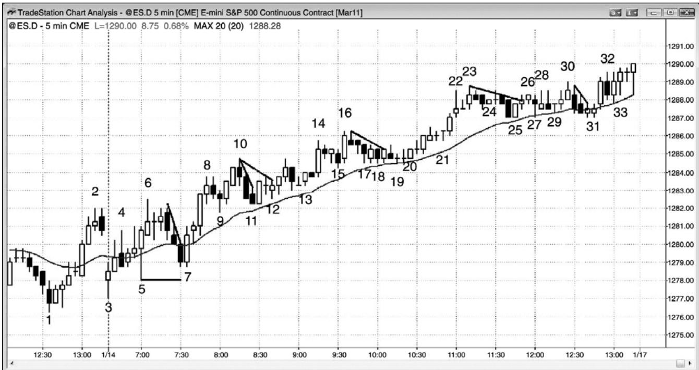
一旦交易者认为市场是总在场内多头，那么最佳交易几乎总是在回撤买进，特别是在均线附近而且信号棒是多头棒时。如图 24.1 所示，昨天以一波强势反弹结束，收盘时，市场是总在场内多头。开盘两条连续多头趋势棒足以使交易者们猜测总在场内头寸仍然是多头。截止棒 6 的四棒多头尖峰进一步证实了买压的强大。棒 7 是一个双棒反转买进架构，它是棒 6之后的一个高点 2，而且与棒 5 构成一个双重底多头旗形。棒 7 低点比棒 5 低点高出 3 个跳动，那是多方紧迫的征兆。他们急于做多，以至于担心市场可能不会完全到达棒 5 底部，于是他们在高出几个跳动处买进。这也是对棒 3 高点的一次突破测试（尽管棒 7 低点比棒 3 高点低了 1 个跳动）。从棒 7 开始连续出现 4 条多头趋势棒，可能会说服大部分交易者市场是总在场内多头，因此，他们正打算在回撤买进，特别是向均线的两条腿回撤，而且信号棒是多头棒，比如在棒 7、12、20、25 和 31。棒 31 是一个更大的高点 2，因为它位于从棒 23 开始的第二条下跌腿的底部。棒 25 标志着第一条下跌腿的结束。截止棒 24，市场已经进入一段紧凑的交易区间。在那一点，大部分交易者要么已经选择了一个买进信号在一直耐心等待，要么就是一直在平仓的情况下等待。一旦紧凑交易区间形成，向上突破的概率便跌至 55%或
更低，即便之前的趋势很强。
对某个信号的解释常常有很多方式，不同的交易者会从不同的角度去观察它。举例说明，棒 12 买进信号是一个三角形突破买进架构，而棒 9 和棒 11 是头两次下推。它也是棒 11 双棒反转高点1（棒11是两棒之中的第一棒）之后的一个突破回撤，也与棒9构成一个双重底。有些交易者把它看作均线处的一个高点2，棒11双棒反转是高点1。棒12与一棒之前的多头趋势棒构成一个微型双重底。大部分可交易的底部来自某种形式的微型双重底（或简单的双重底，比如棒 7 双棒反转处，棒 7 与棒 5 构成双重底），同样地，大部分可交易的顶部来自某种形式的微型双重顶，比如棒 6 与两棒之后的空头棒，棒 10 最终旗形与棒 8，棒 16 最终旗形与棒 14，以及棒 23 与棒 22 构成的双重顶（和最终旗形）。不过，在类似这样的强多头趋势中，大部分交易者应该忽略这些逆势刮头皮架构，只准备买进。
我们注意到，均线下方的唯一一棒是当天第一棒，在棒 5 多头尖峰之后，只有两棒能够收盘于均线下方，下一棒便迅速向上反转。这是一种力量的征兆。在当日收盘，很容易看到这是一个多头趋势日（一轮开盘起多头趋势，一轮尖峰和通道多头趋势，一轮趋势型交易区间多头趋势）。在当天的走势展开时，并不是如此明显，因为趋势日总是看起来正在形成反转。然而，每次回撤只是变为另一个多头旗形。交易者们必须不断寻找强势征兆，如果那些征兆呈现，比如在今天，那么他们必须非常努力地在回撤买进，因为它们是最佳交易。成功率是60%或更高，潜在回撤至少与风险一样大。如果交易者们把那些交易作为波段交易，那么最后的回报将是风险的若干倍。
当市场超越强反转棒棒 5 时，可能已经变为总在场内多头。如果交易者在棒 5 上方买进，他的初始止损位于棒 5 下方，计划风险是 14 个跳动。一旦市场超越强劲的棒 7 双棒反转，他就可以把自己的止损调紧至棒 7 低点下方，那比他的入场低了 11 个跳动。在这一点，交易者知道待在交易中的实际风险只有 11 个跳动。由于他认为市场是总在场内多头，所以他相信等距运动的概率至少是 60%。当胜率是 60%时，产生正交易者方程所需的最低利润，必须至少与他的 11 个跳动的实际风险一样大。也就是说，只要他在棒 5 信号棒高点上方 12 个跳动处获利了结，他的策略就是盈利的，那就意味着反弹最少必须到达棒5上方13个跳动处。这发生在棒 10 期间（它到达棒 5 上方 15 个跳动），这种获利了结是为什么棒 10 拥有空头实体的部分原因）。很多交易者会把部分或全部交易波段化，希望获得更大的利润。
P259
图 24.2 10 年期美国中期国库券期货中的最佳交易
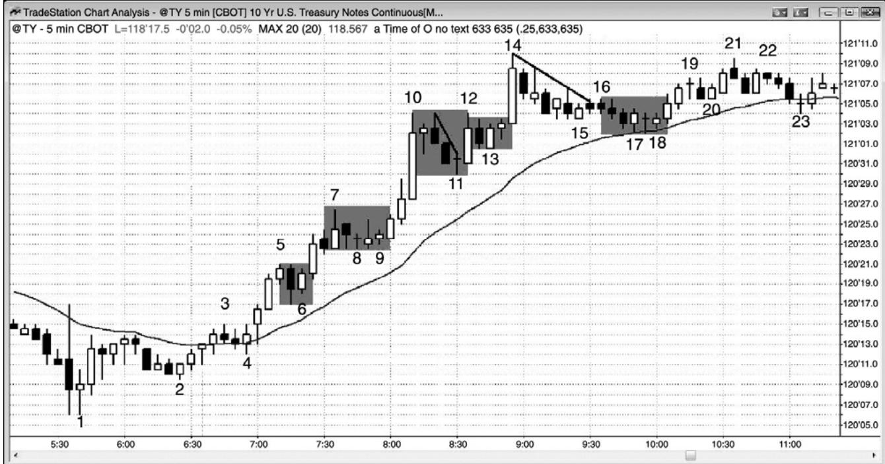
当明确的总在场内趋势中出现回撤时，美国 10 年期中期国库券期货（10-Year U.S.Treasury Note Futures）市场是最适合采用止损单入场的市场之一。如图 24.2 所示，在从棒1 开始的双棒多头尖峰，有些交易者认为市场正在变为总在场内多头，而有些交易者认为它是在棒 4 处失败的低点 2 向多头翻转，特别是在从棒 2 开始的 4 条多头趋势棒之后。当市场从棒 4 到棒 5 向上强势突破时，它显然是总在场内多头。在那一点，交易者们正在回撤买进。棒 6 是一个高点 1 做多买进架构。有些交易者在高点 1 架构买进时会犹豫不决，因为回撤常常会继续，成为高点 2 或楔形多头旗形。如果交易者不想在高点 1 架构买进，也不想冒险错过一轮强趋势，那么他们可以在趋势高点上方设定一张买进止损单。这里，当棒 6 高点 1 正在形成时，谨慎的多头可能会在棒 5 高点上方 1 个跳动处设置一张买进止损单。如果棒 6 处的高点 1 最终引起趋势恢复，而不是引起更加复杂的回撤，那么这将确保他们入场做多。
棒 9 和 11 是高点 2买进架构。棒 9 也与棒 8 构成一个微型双重底，棒 8 高点 1 或高点 2之后的一次回撤（有些交易者把棒7前面的空头棒看作高点1回撤），以及一个三角形突破架构（三次下推分别是棒 7 前面的空头棒、棒 8 和棒 9）。棒 12 是一条大型多头趋势棒，上尾线很短，没有下尾线。这表明多头非常强大。于是棒 13 是一个可靠的突破回撤买进架构。
棒 14 是一波延长的运动和小型交易区间（棒 10 到棒 13）之后的一条大型多头趋势棒，那段小型交易区间可能成为一个最终旗形。在一个最终旗形之后，交易者们通常会等待朝向均线的、至少包含 10 棒的两条腿回撤，然后再次买进。截止棒 15 的下跌运动形成一个楔形多头旗形，但是，由于它是一条微型通道，所以大部分交易者只是把它看作一条腿，不愿意买进。大部分多头微型通道向上突破后都会回撤，所以最强势的多头等着看回撤是会在均线处找到支撑，还是棒 16 下方的运动会引出另一条下跌腿。因为多头趋势非常强劲，所以后一种情况出现的可能性较低，市场只是略高于均线，而且仍然是总在场内多头。棒 18 处的 ii形态是一个极好的买进架构，它是一个微型通道突破回撤，位于均线处，有一条多头信号棒，与一棒之前的多头棒构成一个微型双重底，而且它是一个 20 缺口棒买进架构。
经验丰富的交易者们把棒14看作第二波、第三波或第四波买进高潮，预期随后形成交易区间。对于大部分交易者来说，在这里做空不是最佳交易，但是非常有经验的交易者会在棒14 收盘、在随后的空头棒的收盘价、在那条空头棒下方、或者在随后的十字星棒下方做空，预期至少形成一波向均线的两条腿回撤。这些交易者中有一些也可能使用小型头寸做空，要么是因为他们愿意在更高价位逐步加仓，要么是因为如果他们被止损踢出，他们会对下一个信号变得更加自信，于是会在下个信号利用正常的规模交易。一旦棒 14 收盘，有些交易者便立即在那一收盘价设定限价单做空。那些订单中的大部分都不会被执行，因为随后形成的空头棒的高点从未向上超越棒 14 收盘价。这是买家表现出紧迫感的征兆，他给空头刮头皮者们更多的自信，在空头内包棒的收盘或其下方做空，预期至少会测试均线。下一棒也未能向上超越棒 14 收盘，它的上尾线与棒 14 构成一个小型的双重顶。
P260
为什么很多交易者喜欢在回撤买进的原因之一是风险较低。交易者们所承担的风险是跌至回撤的底部，而不是跌至多头尖峰的底部下方。通常，余下的利润会少一些，但那是对降低风险的折衷。举例说明，交易者可能会在棒10收盘价买进，但是他的理论保护性止损可能会在多头尖峰的底部棒 8 下方。相反地，如果他等待在回撤买进，比如在棒 11 上方，那么他的止损可能是在棒 11 低点下方，他所承担的风险要小得多。
市场总是努力使胜率保持在 50%左右，因为那样多空双方是平衡的。总是必须有一家机构愿意站在你的交易的另一方，而且它不想给你60%的成功率。然而，它不能完全控制胜率，而胜率常常达到60%，带给交易者们一个很强的交易者方程。
图 24.3 欧元/美元图表中的最佳交易
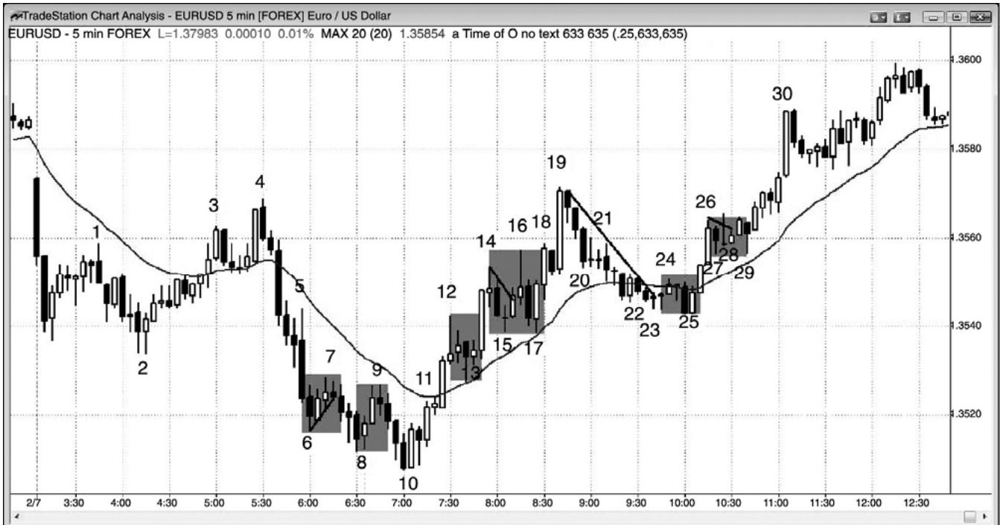
图 24.3 所示为欧元/美元外汇图表的 5 分钟图，一旦市场明显处于总在场内多头或空头，交易者们便准备在回撤入场。当天开始两棒是大型空头趋势棒，位于均线下方，使得市场成为总在场内空头。棒 4 是一个楔形（与棒 1 和棒 3 构成）更低高点，是空头趋势中均线缺口棒做空架构的二次入场，在这一点处，空头趋势已经演变为交易区间（棒 3 是空头趋势中均线上方的第一缺口棒）。棒 5 是一条大型空头趋势棒，它是一条外包下跌棒，试图形成双重底而失败，所以大部分交易者把市场看作总在场内空头。棒 7 低点 1 架构下方和棒 9 双重顶空头旗形（与棒 7 构成双重顶）下方做空，都是合理的交易，棒 9 也是市场在向下突破棒 7 空头旗形后的一个突破回撤做空架构。棒 10 双棒反转处的向上反转，是一个大约有 60%的可能赚到波段利润的架构实例，所以对于所有交易者（包括初学者）来说都是一个很棒的架构。棒 4 是空头趋势中的一条缺口棒，常常引出对空头低点（此时是棒 2）的测试，然后形成一波反弹，最少包含 10 棒和两条腿。截止棒 6 的空头尖峰太强，所以交易者们不能买进。棒 8是一个合理的买进位置，因为它是向下突破棒 2 后的第二次反转尝试，一个扩张三角形底（当天第三棒是第一次下推，棒 2 是第二次），棒 7 空头旗形之后的一个最终旗形反转，还是一条强多头反转棒。扩张三角形底总是重要趋势反转架构。然而，由于截止棒 4 的上涨腿和截止棒 6 的下跌腿都非常大，所以大部分交易者不会把这叫做重要趋势反转，而是用其他的名称（不过在15分钟图上它几乎肯定是一个外观很棒的重要趋势反转）。棒10是一个已经很强的形成中的二次入场。交易者们在棒 10 高点上方买进，它是双棒反转的第二棒，他们的初始保护性止损在它的低点下方。一旦市场到达两倍风险处，他们就部分或全部获利了结，让头寸的剩余部分跟着向上的波段自由奔跑，把止损跟踪调整至最近的更高低点下方。有些人会在棒19双重顶（与棒14构成的）和楔形（棒12、14、和19，以及棒14、16和19）下方离场，另有一些人则会继续持有，一直将止损设在棒 17 下方。
截止棒12，市场显然是总在场内多头，交易者们预期至少再出现一条上涨腿，可能形成一波向上的测量运动，测量基准是从棒 10 到棒 12 的强多头尖峰的高度。多头可能会在棒 13高点1或向上突破棒12时买进。
P261
棒 15 是另一个高点 1，但是在这一点处多头尖峰不是很强，因为它已经形成一个高点 1买进架构，而且市场可能是在一段交易区间的顶部附近。棒 17 是一个更加案例的买进架构，因为它是均线处的高点 2，而且信号棒是一条强多头趋势棒（与前面一棒构成双棒反转）。
棒 22 处向均线的回撤是一条空头微型通道，所以对通道的第一次向上突破很可能形成突破回撤，然后市场再大幅反弹。棒25是突破回撤买进架构。
棒 25 是一个双棒反转，它与棒 23 形成一个双重底。有些交易者可能把它叫做微型双重底，因为它只包含四五棒。它也是棒 24 突破从棒 19 到棒 23 的空头微型通道后的一波回撤，与棒 17 形成一个近似的双重底，是较大多头趋势中的第一均线缺口棒，那也是一个买进信号。由于下降通道比较紧凑，所以等待棒 25 双棒上方的二次入场是一种胜率更高的策略。
截止棒 26 的多头尖峰由 3 条连续的强多头趋势棒构成，所以随后很可能上涨。任意多头的最坏情况保护性止损在尖峰底部棒 25 下方，但是大部分交易者会提前离场，比如在低点棒26 或信号棒棒 25 高点下方。市场在棒 27 上方触发一个高点 1 做多架构，然后在棒 28 上方触发一个高点 2 做多架构。市场仍然是明确的总在场内多头，所以交易者们不应急于在回撤离场。棒29是一个楔形多头旗形买进架构（棒27、28和29是三次下推）；它也与棒27构成一个双重底，是向上突破棒 28 高点 2 多头旗形后的突破回撤买进架构，也是一个失败的更低高点（前一棒是一个小型更低高点和一个失败的高点2买进架构）。
图 24.4 IBM 中的最佳交易
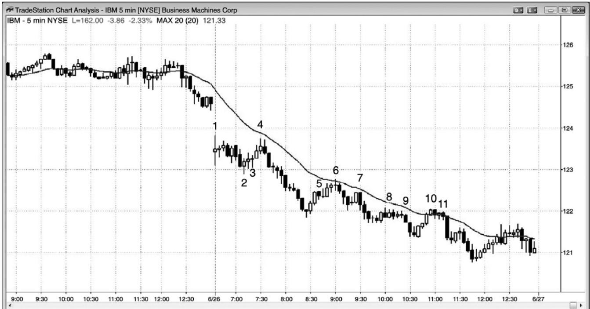
如图24.4所示，IBM 5分钟图上的最佳交易包括：棒2开盘反转和缺口尖峰和通道底，棒 4 均线处的双重底，棒 6 强空头尖峰之后均线处的低点 2，棒 7 低点 2 和微型通道失败突破，棒9小三角形或横向楔形空头旗形，以及棒11均线处的低点2。
强空头趋势中有几次均线回撤。向下突破棒 2 之后，交易者们可能假定今天是一个趋势型交易区间日，甚至可能是一个较强的开盘起趋势日。截止棒 6，交易者们正在向均线的两条腿运动和他们所看到的每个低点2做空。
棒6是均线处的一个低点2做空架构（棒5是一条小型空头棒，是第一条上涨腿的终点）它与一棒之前的高点形成一个微型双重顶，是它前面的内包棒之后的一个单棒最终旗形反转。
棒 7 是测试棒 6 下方的盈亏平衡止损后的向下反转。它也是向下突破结束于棒 6 的空头旗形后的一次回撤。
棒 9 是一个低点 2 做空架构，棒 11 是均线处一个低点 2 做空架构，也与棒 10 构成一个微型双重顶。两个架构看起来都不好，但是在一个强空头趋势日内，你必须相信均线处的低点2做空架构拥有非常高的成功率。
棒 5 之前的双棒多头尖峰很强，大部分初学者把它看作一个迅猛多头反转的开始。截止棒 6 的上涨运动包含 7 棒，只有一棒拥有空头实体。很容易把视线集中在这种强势上，而忽略了之前的走势。这波迅猛的反弹是 20 多棒来第一次向均线回撤，经验丰富的交易者们把它看作一个卖出信号。初学者们只看到运动的强势，打算在随后的更高低点买进，预期走势反转或至少出现第二条上涨腿。他们认为到从棒 6 开始的 3 条强空头趋势棒只是对向上突破当日低点的迅猛测试，从而买进，预期形成下一条上涨腿。经验丰富的交易者们把这看作只是对强趋势的一次反转尝试，因此很可能只是一个空头旗形。他们在棒 7 处的两条腿横向调整做空，正确地预期了空头趋势将会恢复。
P262
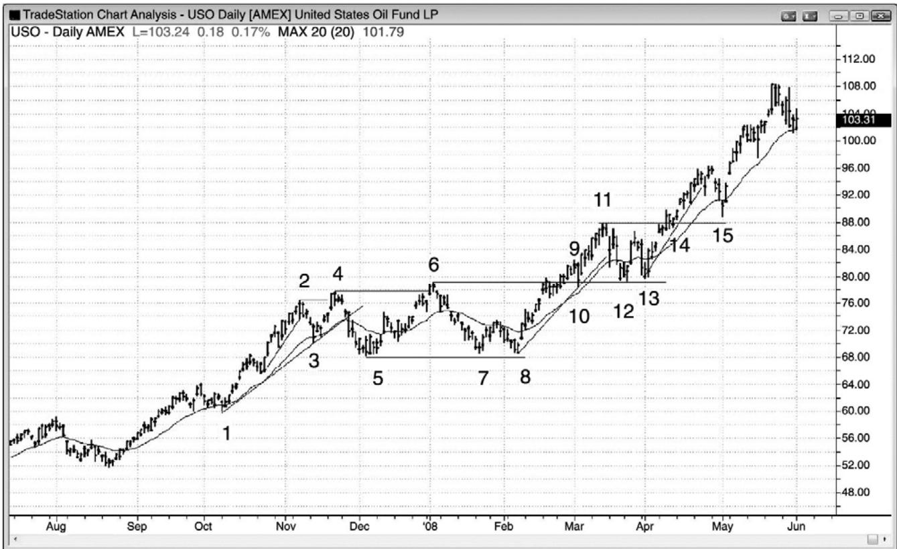
如图 24.5 所示，今天 United States Oil Fund LP（USO）的日线图上的最佳交易架构包括：棒 1 楔形多头旗形；棒 3 对均线的高点 1 测试；棒 5 大型高点 2 中的二次入场（棒 3 是第一次下推）；棒 6 扩张三角形和更高高点重要趋势反转；棒 8 双重底（与棒 5 构成）和微型通道突破回撤（从棒 7 开始的反弹向上突破微型通道）；棒 10 失败的微型通道突破；棒 12二次入场均线缺口棒、双重底（与棒 10构成）、高点2、对棒 6的突破测试；棒 13双重底和高点2；棒15均线处的高点2和对棒 11的突破测试。
市场显然处于一轮多头趋势中，所以最佳交易很可能是任意高点 2，特别是均线附近的高点 2，比如在棒 1、5 和 12。棒 1 是均线处的高点 2，有些交易者把它看作一个小型楔形多头旗形。棒 5 是一个较大的高点 2 买进架构中的第二条下跌腿，棒 3 是第一条下跌腿。
激进型交易者们把棒 1 前后向均线的小幅横向运动看作一个平静的多头旗形，而不是一个反转形态。因此，他们会设定限价单在前一棒低点或其下方买进，而不是等待市场恢复多头趋势。
棒 6 是一个更高高点重要趋势反转和扩张三角形顶，是一个合理的做空架构。然而，大部分重要趋势反转不会引出反向趋势。相反地，它们更有可能演变为交易区间，但是通常拥有足够的空头，可以做小型的波段交易（回报至少是风险的两倍）。
棒8和13是均线下方的两条腿回撤（缺口棒）。
棒 8 是对交易区间低点棒 5 的第二次测试，棒 13 是对交易区间高点突破的第二次测试；两次测试都形成双重底多头旗形。
棒 10 形成一个突破回撤二次做多入场（棒 2、3、4、5、6、8 和 9 之后形成一个失败的扩张三角形顶）。
注意，尽管这是一轮明确的多头趋势，但是棒 6 是一个不错的做空架构，因为截止棒 5有一个趋势线突破。棒 6 是向新的高点的一波两条腿楔形反弹，是一个扩张三角形（棒 2、3、4、5 和 6）的顶部。
棒15是对棒11的突破测试。
在强多头趋势中，你不需要强架构就可买进。你可以在任意位置以市价买进并赚钱，但是架构允许你使用较为紧凑的止损。
一旦交易的账面利润达到利润目标的一半，有些交易者就会把自己的保护性止损移至盈亏平衡点。举例说明，如果交易者在棒 8 上方买进，预期交易区间向上突破，然后形成一波向上的测量运动，那么一旦市场到达棒 9 区域，他就可能把止损移至盈亏平衡点。市场到达棒 9 区域时已经超过了他的目标的一半，而且有几个收盘位于交易区间顶部上方。如果他的保护性止损被击中，那么他决不应该变得忐忑不安，因为那刚好时它应该做的，限制了它的亏损，那种情况至少在 40%的交易中发生。
P263
图 24.6 UltraShort S&P 500 ProShares（SDS）中的最佳交易
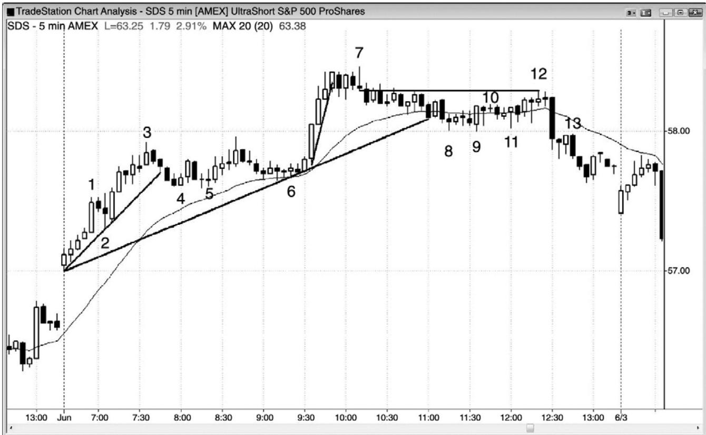
如图 24.6 所示，SDS 5 分钟图上的最佳交易包括：棒 2 开盘多头趋势中的首次回撤，棒5 高点 2，棒 6 均线处的楔形多头旗形或三角形二次入场。
这是一个开盘起趋势日。结束于棒 3 的第一条重要上涨腿，表现出很强的上行动能。当出现强多头趋势时，准备在高点 2 买进。棒 5 和 6 是很棒的高点 2 做多入场，棒 6 也是一波均线回撤。棒 6 是前面倒数第二棒倒数第四棒形成的微型底之后的高点 2，也是从棒 3 开始的大型两条腿下跌中的高点 2，其中棒 4 是高点 1 买进架构。
棒7是第二条上涨腿和一个失败的旗形突破（一个最终旗形反转），缓慢下滑，突破当日重要趋势线。
当市场进入紧凑交易区间或紧凑通道时，大部分交易者应该停止交易。一些经验丰富的交易者会在前一棒低点买进，在前一棒高点做空，在底部的小型多头棒买进，在顶部附近的小型空头棒做空，比如在棒12之后。
由于截止棒 8 的下跌过程中没有明显的反弹，空头已经控制了一个多小时，所以预期出现第二条下跌腿。棒 10 是一条小型上涨腿，棒 12 是第二条上涨腿，在从棒 11 开始的上涨中出现一个低点 2。另外，棒 12 是一条小型棒，在均线上方形成一个缺口。它也是一个小型的、几乎水平的楔形顶，其中棒 10 是第一次上推，棒 11 后面第二棒是第二次上推。它也是一个低点 4 架构，一个更低高点重要趋势反转，一次对棒 7 低点的测试。
棒 13 是棒 9 突破的一个突破回撤，是一条失败的多头反转棒，套住了多头。
就在棒7之前，市场进入一段紧凑的交易区间，并且一直持续到棒12之后。对于止损入场来说，这是最糟糕的环境，因为那恰好与机构的做法相反，而你的任务是复制机构的做法，无论什么时候，只要能复制就复制。作为一名初学者，你不能使用限价单入场并逐步加仓，所以你必须等待。他们正在棒线下方买进，那是市场为什么在跌破前一棒低点后上涨的原因。你还知道他们正在前一棒高点上方卖出，因为市场会在随后的一两棒下跌。由于初学者们应该只使用止损单入场，所以一旦看到市场正进入紧凑交易区间的征兆，他们就决不应该交易，因为止损入场将带来重复亏损。如果你是一位初学者，并且决定每天的交易数量不超过 3 笔，那么在棒 7 后面的那些棒线期间，你在想什么呢？你正在告诉自己这刚好是自己当天一直在等待的行情吗？美好而平静的市场，不再令人恐慌。或者，你认为胜率太低，此时交易是浪费 3 笔交易中的 1 笔，是不是太傻了？由于这明显是止损入场的可怕环境，所以在突破之前实际上不会形成最佳交易，做那些你希望最后会成功突破的交易，你将会赚钱，尽管前 5 到10 个信号不会。在你稳定获利之前，决不要在紧凑交易区间内交易，即便那时，更好的选择也是等待。你可以像机构那样交易，使用限价单入场，当市场向不利方向运动时，在棒线上方对空头逐步加仓，在棒线下方对多头逐步加仓，但那会使你精疲力竭。浮亏会大到令你非常难受，结果使你出错，比如刚好在市场反转向你的方向运动之前以较大的亏损离场。最好的做法是使用止损入场，等待胜率常常达到 60%的环境，不在紧凑交易区间内交易。
P264
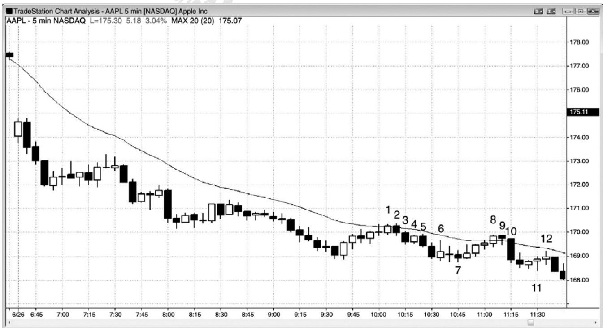
如图 24.7 所示，这张 AAPL 5 分钟图上的最佳交易架构包括棒 1 处和棒 2 双棒反转下方的 20 缺口棒做空架构，以及棒 7 双重底。
AAPL处于一轮开盘起空头趋势中。棒2是一个20缺口棒做空机会的双棒反转架构。棒2入场价是$169.88，入场棒上方的初始止损在$170.38。入场棒是一条外包下跌棒，交易者们一入场就把他们的保护性止损设在它的高点上方，或许是在那一棒收盘之前。这是一种合理的做法，因为它限定了风险，如果市场立即向上反转超越那一棒高点，他们不想做空。如果它不是一条外包棒，那么他们可能会把止损设在信号棒上方。此处的初始风险是 50 美分。
激进型交易者们会把限价单设在棒 3 和 4 高点，预期向上的任何运动失败，成为棒 3 突破空头旗形后的一个突破回撤做空架构。他们把它看作一个平静的空头旗形，而不是一个多头反转，他们预期出现更多卖压，所以在任意一棒的高点上方做空都是合理的交易。
棒 5 是一个糟糕的高点 1，因为市场是处于一轮强空头趋势之中，交易者们不会退出空头，不会反转做多。市场向上超越那一棒 7 美分，但是交易者们仍然不会把他们的保护性止损向下移动，因为最大的未平仓利润只有 38 美分，他们想要给那笔交易更多的时间。一般而言，对于这样一笔交易，直到未平仓利润达到 60 至 80 美分，交易者们才应该把自己的止损移至盈亏平衡点。
在棒 6，交易者们能够使用限价单以$1.00 的利润了结一半股票（棒 6 底部比他们的入场价位低了$1.07）。通过那一棒的外包上涨特性，我们可以看到，大量交易者很可能在这里部分或全部平仓。在这一点处，他们会把自己的保护性止损移至盈亏平衡点，或者略差几便士的位置（$170.91 是合理的价位，因为 AAPL 很少会以超过 1 便士的幅度来猎杀止损），而不会离场，除非出现明确而强劲的反转，在这样一个强空头趋势日，那种反转不大可能出现。他们预期回撤是在恐吓弱势空头离场。举例说明，截止棒 9 的反弹精确地击中了盈亏平衡止损（$170.88），然后向下反转。
如果交易者们被止损踢出，那么他们会在棒 10 再次做空，在棒 9 均线测试和突破测试之后。棒 10 显示出突破测试已经完成了恐吓交易者们离场的目的，因为显然有大量空头入场。如果交易者们让自己被止损踢出，那么他们现在不会再次做空，现在的价位一下子低了41美分！
图 24.8 GS 强空头趋势中的最佳交易
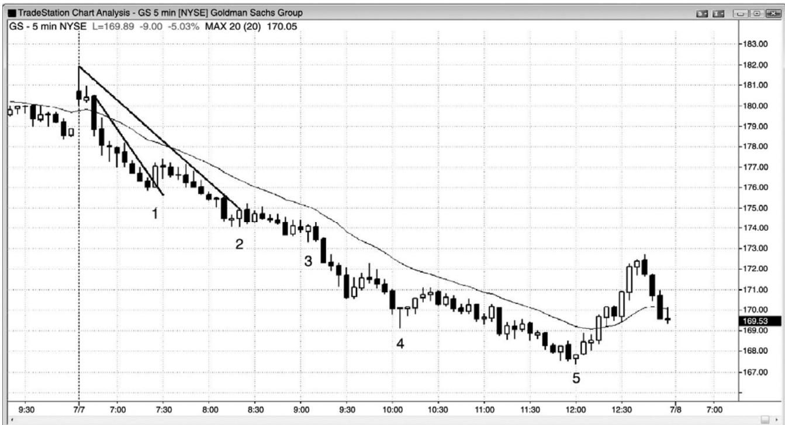
P265
如图 24.8 所示，高盛集团（GS）5 分钟图上的最佳交易包括：棒 1 之后第二棒形成的微型通道失败突破，棒3后面一棒下方的突破回撤做空架构（这是是一个低点2），从太平洋标准时间上午 11:10 空头尖峰开始的尖峰和通道之后，棒 5 多头反转棒上方的二次入场做多架构。
小幅回撤趋势是最强的一类空头趋势，由于之前没有表现出多头的力量，所以交易者们在全天只应考虑做空，除非出现收盘前反弹的征兆。交易者们会在任意小幅回撤做空，直到棒 5 处的潜在底部。截止棒 1，先前最大的回撤只是略超过 1 美元，所以交易者们会设定限价单在最近的低点上方 1 美元处做空。他们需要决定自己的保护性止损设在何处，以便计算合理的最低利润目标。由于这常常比较困难，所以他们需要考虑最坏的情况。举例说明，如果市场向上超越当天第四棒，那么空头便会弱很多。因此，他们会使用略高于第四棒高点的保护性止损，大约在$179.50。由于他们会在$177附近做空，所以他们承担的风险大约是$2.50。如果他们一笔交易正常承担的风险不超过$500，那么他们只能交易 200 股。由于这是一轮趋势，所以他们必须假定最少有60%的可能会到达一个新的低点，或者说大约$1.00的利润，但是他们只应选择潜在回报至少与风险一样大的交易。也就是说他们应该努力在他们的入场价位下方$2.50、或$174.50 附近了结一半头寸（100 股）。他们的订单将在棒 2 前面倒数第二棒一条空头趋势棒被执行。在那一点，他们会把止损移至盈亏平衡，继续持有，直到总在场内头寸反转为多头，直到他们的止损被击中，直到最后一小时左右出现的任意合理的向上反转，或者直到当日收盘。如果他们在棒 5 上方离场，那么他们在第二个 100 股上便会赚到$900。
在向$170 的多头尖峰，市场变为总在场内多头，如果他们此时离场，他们就会赚到$700，如果他们一直坚持到收盘，那么那第二个100股大约也是赚到$700。
这是应该避免反转入场的一个完美实例。每天，你都应随时分析图表，尤其是在开盘后的一两个小时，以便决定当天是否是一个趋势日（趋势日的主要类型在这一系列书的第一本书中讨论）。如果当天是一个趋势日，那么就不应做逆势交易。类似这样的开盘起趋势日是最容易看出的趋势日。截止当天第三棒，你会猜测它是否是空头趋势日（一条大型空头趋势棒，大幅跌破开盘价），而当市场向下突破棒 1 时，你已经非常自信。
棒 1 反弹是一条大型多头趋势棒，突破了一条微型趋势线，所以很可能失败。心急的交易者可能会在棒 2、棒 3 和棒 4 等反转棒上方买进，认为在趋势线突破期间，多头显示出足够的力量。然而，从当天第三棒开始，市场一直位于均线下方，交易者们应该记得类似这样的小回撤空头趋势日，向均线的第一次反弹通常失败，然后市场测试低点。不要劝说自己市场已经走得太远，应该出现反弹。根据定义，你正在逆势思考，正在寻找一个强趋势日中的逆势刮头皮。你害怕在低点附近卖出，希望出现趋势反转，那是一种低胜率赌注。不仿计算一下。大部分逆势刮头皮都将失败，你在每笔交易上的损失将完全抵消你在最后一两笔交易上的盈利。
然而，由于GS一整天在均线处都没有可交易的低点2，所以经验丰富的交易者甚至会在最微小的回撤做空，如果回撤的上升幅度比他们预期的大，那么就依靠典型的回撤序列（在这一系列书的第二本书讲过）使自己离场。每种类型的第一次回撤，随后通常都出现对趋势极点（这里是当日低点）的测试。
P266
图 24.9 VOD 日线图上的最佳交易
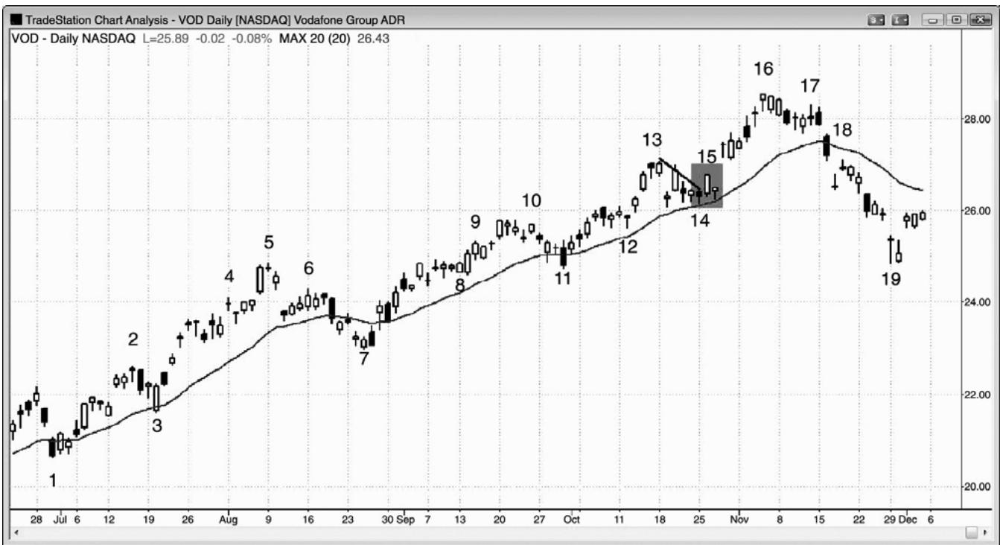
如图 24.9 所示，England-based Vodafone Group（世界上最大的通讯服务公司之一，VOD）这张日线图上的最佳交易包括：棒 3 均线处的高点 1，棒 7 楔形多头旗形和一条均线缺口棒的二次入场，棒 8 小型三角形，棒 11 向均线的楔形多头旗形，棒 12 高点 2，棒 14楔形多头旗形，以及棒15低点处的突破回撤做多架构。
当出现一轮强多头趋势和多头旗形突破，而且突破棒有一个多头实体时，在它的低点买进是一种可靠的策略。这是因为，回撤通常会成为一个突破回撤做多架构，你正在一个较低的价位买进。VOD在日线图上处于一轮强多头趋势中。棒15是一条多头趋势棒，突破了均线处的一个楔形多头旗形，所以任何回撤都很可能非常短暂，而且会成为突破回撤买进架构的信号棒。交易者们会使用限价单在棒 15 低点买进。计划在回撤棒上方买进的交易者们，失望地看到次日形成的大型上涨缺口。如果他们仍然想要做多，那么他们的入场价位就要糟糕很多。
市场从棒 5 开始，跌到了沿着从棒 3 开始的上升通道底部的趋势线（未给出）下方，但是双棒下跌甚至没有触及均线。这使得棒6成为一个重要趋势反转更低高点的糟糕的候选点，市场更有可能只是在制造一波回撤。回撤结束于棒7高点2、楔形多头旗形和均线缺口棒。
图 24.10 大部分时间里准备低买高卖
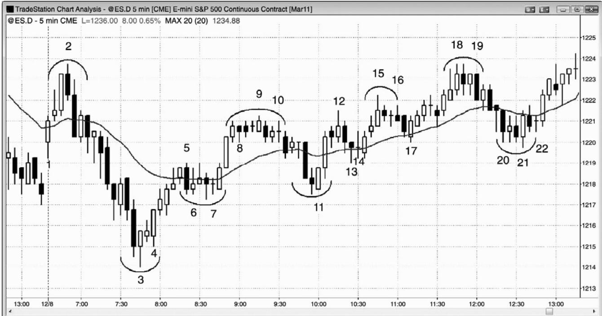
P267
一般来说，总要准备低买高卖，但是在强多头趋势中，却是在高点买进，在更高的价位离场，在强空头趋势中，是在低点买进，在更低的价位离场。然而，如果你在自己预期的微型顶部做空，比如图 24.10 所示电子迷你图表中棒 15 或 16 下方，然后市场形成一个高点 2（比如在棒 17），那么就要离场，甚至反转做多。特别地，如果高点 2 信号棒是一条正在测试均线的多头棒，那么更应如此。类似地，如果你在一条空头腿的底部买进，然后市场形成一个合理的低点 2，空头信号棒测试均线底部，那么就要离场，并且考虑反转做多。
当电子迷你中的平均日区间大约为 10 到 15 点时，交易者们在一笔交易上通常必须承担两点的风险。他们应该寻找回撤至少与风险一样大、胜率至少 60%的交易。大部分交易日，通常会有 5 个或更多这样的架构，比如在这张图表的棒 1 开盘反转做空，在低点棒 3 上方买进，在高点 2 回撤（棒 7，棒 14 后一棒和棒 17）以及棒 22 微型通道突破回撤买进。记住，如果交易者们认为一个架构可能不错，那么他们应该假定那个架构的成功率至少是 60%。如果潜在回报至少与风险一样大，那么将产生一个正的交易者方程。
注意，大部分微型反转来自微型双重顶、微型双重底和小型最终旗形。刮头皮者们喜欢在下单之前看到这些架构。
图 24.11 回报总应该至少与风险一样大
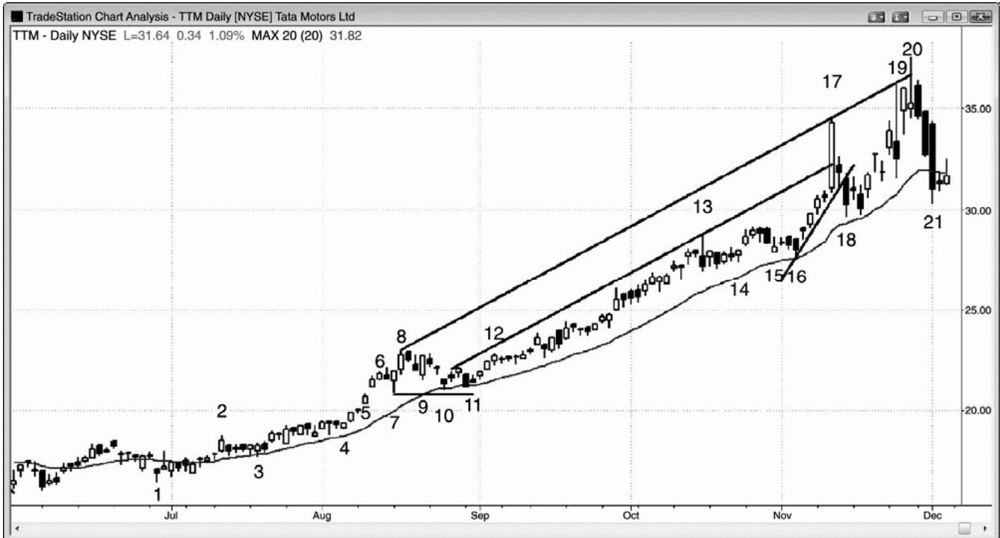
最佳交易的成功率最低是 60%，潜在回撤至少与风险一样大。如图 24.11 所示，印度汽车制造商Tata Motors Ltd（TTM）在这张日线图上的最佳交易包括：棒3和棒4高点2架构，从棒5到棒6的多头尖峰中的三棒中的任何一棒，棒10高点2，棒11楔形多头旗形，棒 12突破后的高点1，棒 14突破回撤和它的前一棒的高点2入场，棒16高点2，以及棒 20更高高点反转。
强趋势中向均线的楔形多头旗形回撤，是一种可靠的买进架构。从棒 1 开始，TTM 处于一轮强多头趋势中，截止棒8在不到两个月的时间里上涨了几乎40%。在棒 10处，市场形成一个向均线的高点 2 回撤，那是一个合理的买进机会，在棒 11 内包棒演变为一个楔形多头旗形买进架构，同时也在均线处。棒 11 是突破结束于棒 10 的多头旗形后的回撤，所以它也是一个突破回撤买进架构。如果交易者们在棒10上方买进，那么他们会在两棒之后出现的抛盘中在盈亏平衡点离场，或者他们会依靠信号棒下方的保护性止损，那没有被击中。他们还会将止损设在略低于棒 7 低点处。
棒 7 是多头趋势中一个强多头尖峰中的第一次回撤，随后没有形成买进高潮。这是一个理想的高点 1 做多买进架构，也是一个微型通道失败突破买进架构。它是一个突破回撤买进架构，因为它是向上突破结束于棒 5 突破的紧凑交易区间后的第一次回撤。
棒17处巨大的多头趋势棒是一波买进高潮。每当出现一轮持续10棒、20棒或更多棒的趋势，然后出现一条巨大的多头趋势棒时，那一棒常常代表着耗尽。它是由部分最后的空头离场和迟到的多头买进造成的。这两群都是弱势交易者。在这一点处，强势多头只会在回撤买进，强势空头正在做空，而且会在更高价位做空。棒 17 突破向上大超越了过去一两个月的趋势通道线，我们需要画一条更高的趋势通道线。在棒 19 和 20，市场尝试向上突破那条线，两次都遇到了很强的卖压，通过两条棒线很长的上尾线、棒 19 的空头旗形、以及棒 20 收盘远低于中点便可看出。当市场两次试图做某件事情均告失败后，它通常试着向相反的方向运动。从棒 18 开始的空头棒，以及棒 19 和 20 很长的上尾线，都表明卖压正在累积，从棒 17开始，棒线的长度大大增加，表明多头正异常努力地将趋势转变为一轮更强的多头趋势。他们的努力引发了自我的耗尽，卖压逐渐将他们挫败。市场很可能至少形成一波两条腿调整，趋势可能反转。
P268
截止棒 18 的抛盘向下突破了一条多头趋势线，所有的卖压使得抛盘很可能出现，所以在棒 20 后面的强空头棒下方做空是一笔高胜率交易。它是一条收盘于低点的大型空头趋势棒，与棒20构成一个很大的双棒反转。空头实体的幅度和极小的尾线表明卖压非常强。
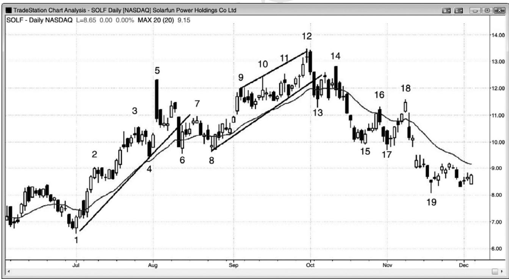
如图 24.12 所示，中国光电池制造商林洋电力控股（SOLF）日线图上的最佳交易包括：棒4均线处的高点2，棒5第三次上推后的巨型向下反转，棒7两次强势下推后的低点2，棒8 双重底多头旗形，棒 9 后面以及棒 10 后面的小型高点 2，棒 12 更高高点，以及棒 14 两条
腿更低高点。
更高高点反转之后通常是一个更低高点做空架构。SOLF 从棒 5 高点开始形成一波很强的下跌运动。棒 6 之前形成第二条大型空头趋势棒，在棒 3 和 4 前后又出现另外几条空头趋势棒。这些都代表着卖压，卖压正在累积，在某个点处可能引起趋势反转。然而，趋势线突破之后，空头未能将空头趋势棒连续在一起，所以总在场内头寸仍然是多头。
截止棒 8 的抛盘强势突破多头趋势线，但是截止棒 9 的迅猛反弹向上突破棒 7（头肩顶的右肩），所以很可能出现坚持到底。在截止棒 9 的上涨尖峰之后，市场形成一条上升通道，至棒 12 结束，在棒 12 上方形成一个更高高点。从棒 5 开始的强势卖出之后，空头正打算做空，多头正打算获利了结。有些交易者把棒 12 看作通道内的第三次上推，棒 9 或棒 10 是第一推，棒 10 或棒 11 是第二推。棒 12 信号棒是一个十字星，所以有些交易者可能可能在等待更多空头力量出现。
棒12之后的强空头趋势棒是强卖压的征兆，带给空头在随后一两棒积极卖出的自信。这个三棒空头尖峰由大型空头实体构成，该尖峰突破了多头趋势线。交易者们相信很可能出现更多卖压，因为市场现在是总在场内空头，所以他们打算在反弹时做空。
市场在棒 14 形成一个两条腿更低高点，测试棒 12 低点，从那一棒的第一个跳动开始，市场下跌。交易者们非常信息市场正在下跌。当市场跌破它前面一棒的低点，成为一条外包下跌棒时，有些交易者们做空，而有些交易者在向下突破棒13的尖峰做空，预期至少出现一波向下的测量运动。
截止棒15的空头尖峰也很强，但是有些空头被截止棒18的迅猛反弹套出，略高于棒16高点。有些交易者在棒15多头趋势棒上方买进，因为它与棒8构成一个双重底多头旗形，还是一个双棒反转，一个从一棒之前开始的单棒最终旗形反转。然而，空头在棒 18 的后一棒返回市场，制造了一个大型空头实体。很容易会被套出一笔很棒的交易，重要的是努力避免被套出。不要太早调紧自己的止损，尝试利用盈亏平衡止损持有部分头寸，直到市场明显变为总在场内多头。截止棒 18 的反弹并不足以令总在场内头寸翻转，所以波段交易者们应该坚持持有空头。
P269
从棒 5 到棒 8 的抛盘非常强劲，足以令交易者们猜测市场是否正在从一轮多头趋势演变为交易区间。截止棒 12 的反弹包含很多回撤、空头实体、以及带有上尾线的棒线，它们都是卖压的征兆，表明正在向双向市场转变。这看起来更像是交易区间内的一条多头腿，而不是多头趋势内的一条腿。交易者们正开始在波段高点上方卖出，比如在棒 10 向上超越棒 9 时，或者在棒11向上超越棒10时。棒12是一个更高高点（棒5上方）重要趋势反转的信号棒，但是大部分交易者认为更有可能形成交易区间和对区间底部棒 8 的测试，而不是空头趋势，几乎总是这样（大部分交易区间突破尝试挫败）。虽然在棒 15 和 17 之间的区域内有一些获利了结，但是棒 16 和 18 形成一个双重顶空头旗形，引出了对区间的向下突破。很多交易者在棒15区域内部分获利了结，把他们的保护性止损移至盈亏平衡点，希望出现一个更大的下跌波段，但是知道概率不到 50%。然而，他们有时会赚到大笔的利润，比如在这里。
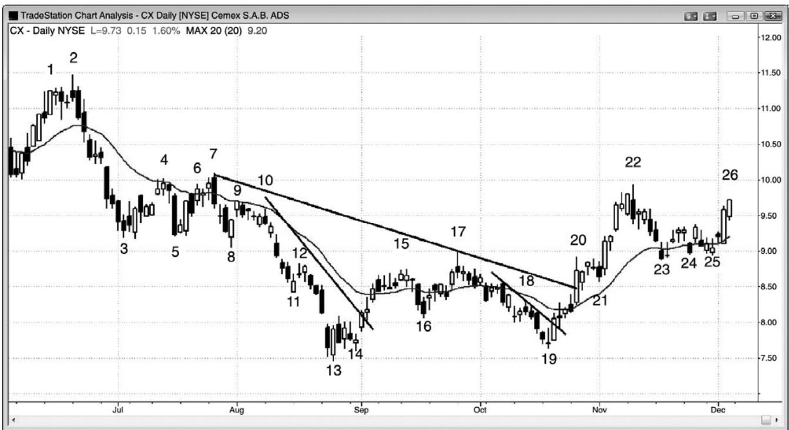
如图 24.13 所示，墨西哥陶瓷生产商 Cemex（CX）这张日线图上的最佳交易包括：棒 2最终旗形反转和与棒 1 构成的微型双重顶， 在随后空头尖峰内三棒中任意一棒做空，棒 4 向均线的楔形空头旗形回撤，在棒 5 卖出高潮（挫败的空头突破）和双重底之后的小型多头内包棒上方买进， 在棒 7 低点 2 和微型双重顶下方做空，或者当它跌破前一棒低点时做空（因为那是一条低点 2 卖出信号棒）， 在棒 8 三重底和多头反转棒买进，在均线处棒 10 双重顶空头旗形（与棒 9 构成）做空（它也是空头趋势中均线处的一个空头反转棒低点 2），在棒 12微型通道挫败突破和向下突破三重底后的突破回撤做空，在棒 14 微型双重底多头旗形以及失败的低点 2 买进， 那个失败的低点 2 形成于很强的棒 13 多头反转棒和大型两条腿下跌之后（一波近似的腿 1＝腿 2 运动，其中腿 1 是从棒 2 到棒 3 的尖峰，腿 2 是从棒 9 到棒 13 的空头通道，包含三推；棒 7 是一个较小的空头尖峰，也在同一空头通道内）， 在棒 15 均线缺口棒下方做空，在棒 16 更高低点上方买进，在棒 17 低点 2（从棒 16 开始出现两次上推，棒 15是一个更大的低点2的第一次上推）和楔形空头旗形（棒13后一棒是第一次上推）做空，在棒 19 更高低点重要趋势反转买进， 在棒 21 高点 2 买进（它也棒 20 后面的多头内包棒构成一个微型双重底），以及在均线处的棒 25 三角形（或楔形多头旗形）买进，其中很多棒线拥有多头实体（买压）。
当出现一个强空头尖峰，而且交易者们预期出现更多卖压时，市场是总在场内下跌，交易者们会寻找做空机会。CX 形成一个很强的空头尖峰，到棒 3 结束。交易者们正预期价格下跌，正准备在反弹做空。在棒 4 处，他们会在向均线的小型两条腿反弹做空。由于交易者会使用限价单在均线处做空，因为这是一个强空头尖峰之后第一次向均线回撤。另外一些交易者会在棒 4 下方使用止损单做空。棒 4 跌破了它的前一棒，是做空的首次入场，在棒 4 下方做空的交易者们正选择二次入场。
棒 7 处较大的两条腿反弹是一个低点 2 做空架构。激进型空头使用限价单在前一棒高点和棒 4 上方做空，另外一些则在那一棒跌破前一棒低点，产生一个二次入场做空信号时做空（棒6是第一个信号）。很多交易者喜欢在强空头趋势棒下方做空，于是在棒7下方做空。在那么多交易者打算在那里做空，于是市场在次日向下跳空。
出现一个强空头尖峰，到棒 11 结束，棒 12 向上突破微型通道。空头在棒 12 下方做空，预期第一个微型通道突破尝试失败。
P270
虽然截止棒 17 的横向运动向上突破了一条陡峭的空头趋势线，但是截止棒 13 的下跌运动远远低于棒 8，于是交易者们重新开始寻找底部的过程。他们需要向上突破空头趋势线的另一波反弹，以及对趋势低点的另一次测试，然后他们才愿意相信市场正在反转，而不只是在形成另一波空头反弹。截止棒 17 的两条腿上涨非常强劲，向上大幅突破均线，所以是买压的征兆。交易者们在空头反转棒棒17下方做空，因为他们把它看作一波大型两条腿反弹的终点，所以是一个低点 2 做空架构。它也是空头趋势中的一个均线缺口棒做空架构，那轮趋势仍然需要明确翻转为总在场内多头。
外包十字星棒棒19不是一条很强的更高低点买进信号棒，但是有些交易者在它的上方和随后的强多头趋势棒（向上突破一条空头趋势线）上方买进。它也是对棒14的向上突破测试做多架构，猎杀了那些多头的盈亏平衡止损。猎杀盈亏平衡止损的突破测试，然后在新趋势方向向上反转，是一个风险/回报极好的架构。所承担的风险是跌至信号棒底部，回报是一轮新多头趋势的幅度，要比风险大很多倍。
截止棒20的多头尖峰向上强势突破均线和一条很长的空头趋势线。有些交易者把这看作是对一个倾斜的头肩底的颈线的向上突破。大部分交易者认为从棒 19 到 20 的多头尖峰非常强劲，所以价格随后应该上涨。这就意味着他们把市场看作总在场内多头。他们在棒 21 高点2 架构上方买进，接着在棒 24 高点 2 上方买进。在棒 25 楔形多头旗形向均线回撤时的多头棒上方买进较为安全。
另外一些交易者认为截止棒 23 的下跌是一条空头微型通道，但是由于它仍然是在均线上方，而且仍然是在一轮强多头趋势内，所以他们认为它很可能成为一个多头旗形的一部分。因此，他们更加合理的地假定突破会失败，但是失败不会走得太远，而是会成为一个突破回撤买进信号，而不是预期突破失败并在它下方做空。记住，当一条空头微型通道的失败突破失败时，它就成为一个突破回撤做多入场。棒 24 是突破回撤，但是它有一个空头实体，所以大部分交易者不会在它的高点上方买进。然而，回撤成为一波截止棒25的两条腿回撤，那也是一个双重底多头旗形。
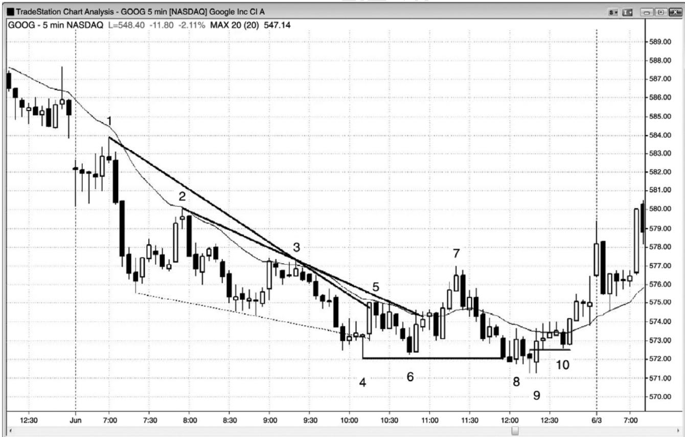
如图 24.14 所示，谷歌（GOOG）的这张 5 分钟图上的最佳交易架构包括：棒 2 和棒 3 向均线的低点 2 回撤；在棒 4 最终旗形和楔形底反转买进；在棒 7 均线缺口棒、低点 2 和双重顶做空；在棒9重要趋势反转更低低点买进；在棒10更高低点和止损猎杀突破测试买进。
当向上强势突破空头趋势线时，交易者们会准备在对空头低点测试时买进，前提是测试不会跌得太低。GOOG形成一波截止棒7的强势反弹，由尾线短小的多头趋势棒构成。它向上突破了空头趋势线和均线，从棒 1 开始的空头尖峰之后的下跌运动中出现若干强多头趋势棒。那些尾线短小的多头趋势棒表明多头正心甘情愿地买进。那种买压正在累积，在某个点处，它能够耗尽空头的力量，于是多头可以控制市场。
P271
激进型交易者会使用限价单在棒 5 后面的空头棒高点做空。形成三条连续的重叠棒，任何多头都被迫在这段交易区间的顶部买进。考虑到那刚好是在空头日中均线的底部，所以那是一种特别糟糕的想法。由于它作为一个买进架构很可能失败，所以敏锐的交易者们会在弱势多头买进的位置做空。
从棒 7 开始的抛盘包含很多重叠棒和几条多头棒，那表明存在双向交易。空头并未完全控制市场。市场一旦跌破棒 4 空头低点，买家们就在棒 8 介入。他们未能令市场反转，市场再次跌破那个空头低点。棒 8 是第一次向上突破从棒 7 开始的空头通道，所以很可能不会出现坚持到底。然而，在棒 9 第二次尝试令趋势反转时，多头却能占据接下来三棒。棒 9 是棒8向上突破微型空头通道后的突破回撤，空头通道就是多头旗形。
当空头试图令从棒 9 开始的反弹成为一个三棒空头旗形时，多头在棒 10 更高低点处将他们战胜。棒 10 在预期出现棒 9 做多架构的信号棒上方 8 美分（对于一只$500 的股票，8 美分是微乎其微的）向上回转，使得交易者们可以在它的高点上方加仓。它还把多头套出，现在他们将追着市场上涨。多头认为棒 9 很可能至少引出两条上涨腿，所以在接下来的几棒中，他们设置限价单在前一棒低点或其下方买进。他们预期任何低点 1 做空架构失败，成为一个更高低点。他们的买进限价单将在棒 10 被执行。他们的保护性止损将位于棒 9 低点下方。
空头在当天早些时候拥有不错的做空机会。市场向下跳空，在略低于均线处在棒 1 形成一个低点 2 做空架构。在棒 1 后面两条大型空头趋势棒期间，激进型空头会在它们的收盘价以及低点下方1个跳动处做空。
空头尖峰非常强劲，很可能出现坚持到底卖出，而且极有可能是以空头通道的形式，当天或许成为一个尖峰和通道空头趋势日。空头将打算在反弹卖出，那将是在正在形成的空头通道的顶部。棒2是均线处的一个低点2做空架构，是对当天第一棒被向下突破的测试。
棒3是均线处的又一个低点2做空架构，尽管这个空头旗形中包含强多头趋势棒。
棒 4 是从空头通道内一个双棒最终空头旗形和第三次下推开始的向上反转，那常常至少引起两条腿反转。最低限度，这个楔形底很可能表现得像一个空头台阶形态，测试前一次下推的低点（从棒 2 开始的抛盘底部的波段低点）。它也是第二次尝试向上反转，第一次是在一棒之前。虽然十字星信号棒并不理想，但是下跌过程包含很多多头趋势棒，所以并不需要非常多的力量便可令市场向上反转。空头趋势并不都是那样强劲，其中包含大量双向交易。
当在一轮空头趋势中的低点买进时，通常最好是至少部分做刮头皮，以便在测试均线时部分离场，那也刚好位于前一波段低点上方。然后，他们可以把自己的保护性止损移至盈亏平衡点。一旦市场跌破从棒 5 开始的两条空头趋势棒，大部分交易者就会离场，但是有些交易者会坚持把止损设在棒 4 空头低点下方。因为截止棒 5 的反弹只不过刚刚向上突破趋势线，所以这仍然不是一个很强的底部，因此，市场仍然是总在场内空头。对于多头来说，保持谨慎并及早离场是明智的做法。
棒 7 是一个可以接受的均线缺口做空架构，与棒 3 形成一个双重顶空头旗形，是空头趋势中的两条腿上涨。但是，在一条多头趋势棒下方做空是比较冒险的，特别是在一个三棒多头尖峰之后。较好的做法是准备在对空头低点的更高低点或更低低点测试时买进。
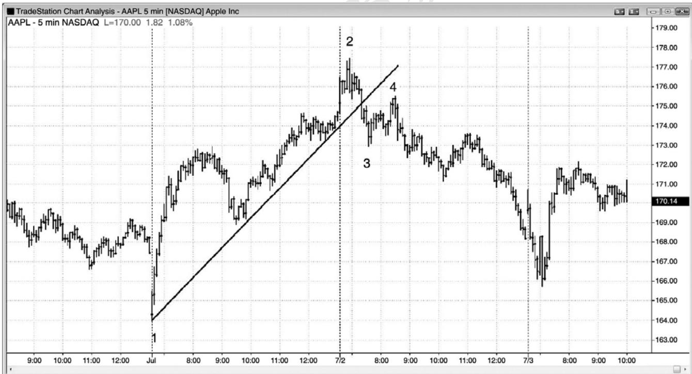
P272
如图 24.15 所示，苹果（AAPL）的这张 5 分钟图上的最佳交易是截止棒 3 的空头尖峰之后棒 4 更低高点重要趋势反转和突破测试。在从棒 1 开始的多头尖峰中，激进型交易者会在任意多头趋势棒期间买进，但是，由于他们的保护性止损会更远，所以交易者们需要交易较
小的头寸。
一旦市场跌破一个尖峰和通道顶后的一条陡峭通道，交易者们常常准备在更低高点做空。截止棒 3 的下跌拥有很强的动能，向下大幅突破多头趋势线。交易者们猜测总在场内头寸已经向空头翻转，正在寻找更低高点卖出架构。截止棒 4 的两条腿更低高点反弹，是对棒 2 双棒反转向下突破的测试，它是一个低风险卖出信号，预期至少形成第二条下跌腿，趋势可能反转。
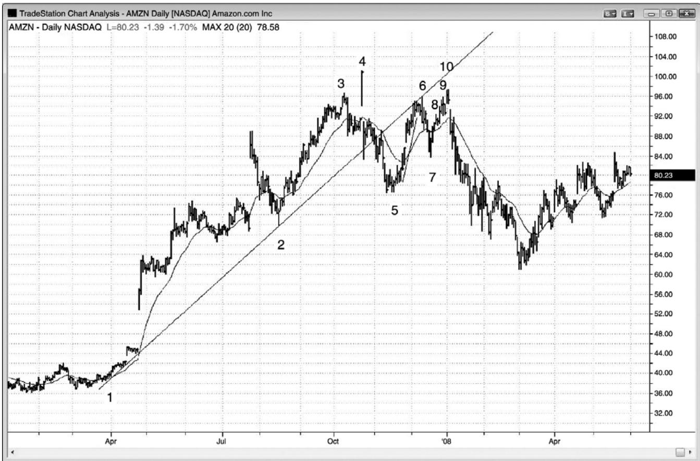
如图24.16所示，亚马逊（AMZN）这张日线图上的最佳交易架构是棒10两条腿更低高点重要趋势反转，还有其他几个特点支持它成为最佳交易，在后面几段中描述。另外几个不错的交易架构包括棒 2 处的楔形多头旗形、均线缺口棒、双重底多头旗形，以及棒 3 最终旗形和楔形顶。有些交易者认为第一次上推是棒 2 抛盘前多头趋势的高点。另外一些交易者则把它看作第二次上推，把 6 月高点看作第一次上推。
P273
在一条多头趋势线被强势向下突破之后，交易者们将准备在更低高点做空。AMZN 日线图上形成一波两条腿回撤，在棒 10 处形成一个更低高点。有些交易者认为它与棒 3 或棒 4 高点构成一个双重顶，当然与棒 6 高点也构成一个双重顶。它与棒 6 形成一个双重顶空头旗形，所以是一个二次入场做空信号。棒 6 是第一个，但是截止棒 6 的上涨包含太多动能，很可能不是空头趋势的起点。另外一些交易者认为棒 4 只是一个例外，把截止棒 10 的上涨看作一种形式的大型楔形顶，其中棒 2 前面的高点是第一推，棒 3 是第二次，棒 10 是第三次。
棒 7 突破了一条较小的多头趋势线，表现出更多的看空力量，然后在截止棒 10 的反弹中再次测试棒 3 和 4 高点。
棒 10 是棒 7 开始的迅猛反弹之后的三次上推，总是必须把它看作一种形式的楔形反转形态。这是交易者们希望找到的一个不错的二次入场做空机会：重要趋势突破（截止棒 5）之后，测试趋势高点（棒 4）的两条腿反弹中一个由小楔形构成的双重顶空头旗形，当交易者们正在寻找一个架构可以以有限的风险做空时，所有类型的架构在同一时间出现了。
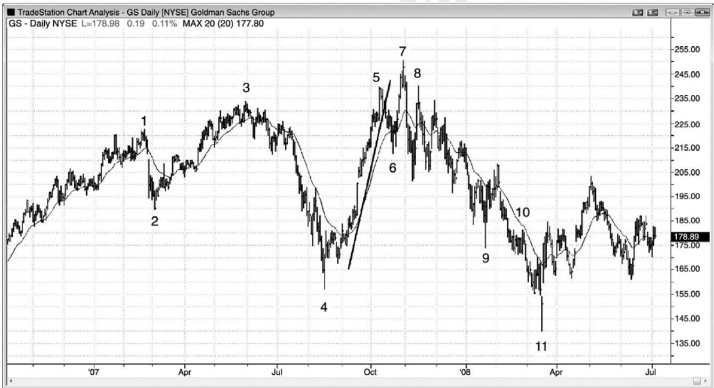
如图 24.17 所以，高盛集团（GS）在这张日线图上的最佳交易包括：棒 3 更高高点重要趋势反转和楔形顶，棒 4 卖出高潮之后的更高低点和小型双重底多头旗形，棒 7 更高高点（高于棒 5 和棒 3）、最终旗形、以及扩张三角形顶（它是一个大型扩张三角形的二次入场，其中棒 1 是第一推，棒 3 是第二推，它是一个小型扩张三角形的第一次入场，其中棒 5 前面的暂停是第一推，棒5是第二推），棒8更低高点，棒9后面的低点2和楔形空头旗形，均线附近
的棒 10 低点 2，棒 11 岛形底和扩张三角形多头旗形（棒 2 是第一次下推，棒 4 是第二次；
记住，扩张三角形多头旗形常常跟在扩张三角形顶之后）。
虽然一波强势反弹可能是一轮多头趋势的一部分，但是它也可能只是对交易区间顶部的一次测试，是由卖出真空产生的。空头预期市场向上超越棒 3 高点，所以他们等待市场到达那里后做空。在从棒 4 开始的上涨过程中，他们一直是看跌的，但是在市场按他们的预期向上突破棒 3 高点之前，做空是不合理的。如果他们认为市场将会涨得更高，那么在到达他们认为不会大幅上涨的价位（那将是在一个新的高点）之前做空就是愚蠢的。当截止棒 3 的反弹向上超越棒 1 高点时，他们看到市场下跌，他们预期这次也发生相同的现象。由于这是第三次上推，所以他们可能会在延长的抛盘起点做空，抛盘应该至少包含两条腿。由于那是一个扩张三角形顶（棒 1、2、3、4 和 7），所以一个合理的目标是运动至棒 4 下方，在那里，市场可能形成一个扩张三角形多头旗形。
棒 11 是扩张三角形多头旗形中的一个做多入场信号。虽然这是一个合理的交易架构，但是它不如这一章所讲的其他反转强。
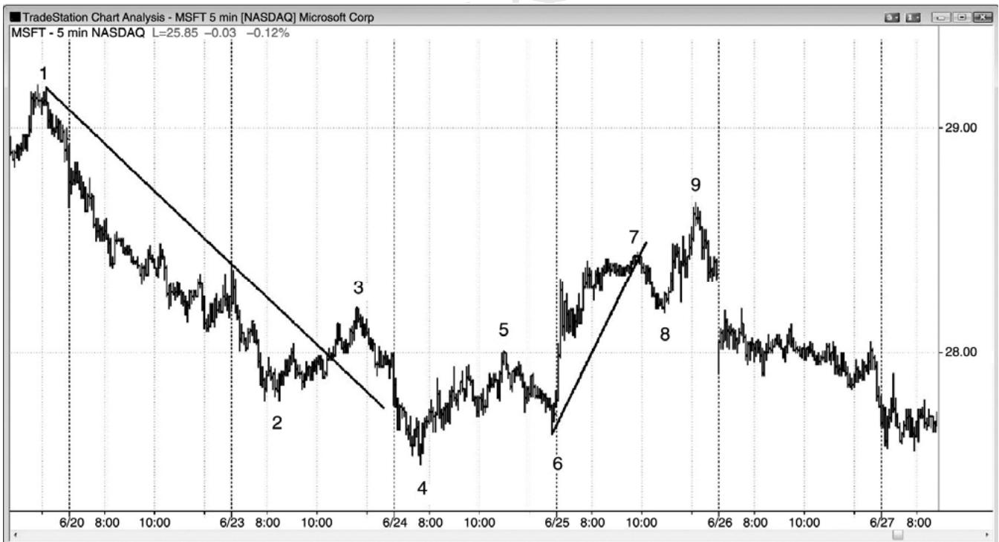
P274
如图 24.18 所示，微软（MSFT）这张 5 分钟图上的最佳交易包括：棒 3 楔形空头旗形；棒 4 更低低点重要趋势反转和小型楔形底；棒 5 小型和大型低点 2；棒 6 更高低点重要趋势反转、楔形多头旗形、以及双重底多头旗形；棒 9 两条腿更高高点重要趋势反转、小型尖峰和通道顶、以及楔形空头旗形（棒3、7 和9）。
虽然截止棒 3 的反弹向上大幅突破空头趋势线，但是截止棒 4 的抛盘又大幅跌破棒 2，所以交易者们在认为趋势反转可能进行之前需要一个更高低点。棒 6 是一个更高低点和一个双棒反转，提醒交易者们在次日当第一棒向上超越双棒反转时买进。
截止棒 8 的下跌运动向上突破多头趋势线后，截止棒 9 的反弹是一个两条腿更高高点。它也是从棒 4 低点开始的三次上推，棒 5 和棒 7 是头两推。有些交易者把那波反弹看作一个大的楔形空头旗形，其中棒 3 是第一推的结束，棒 7 是第二推的结束。
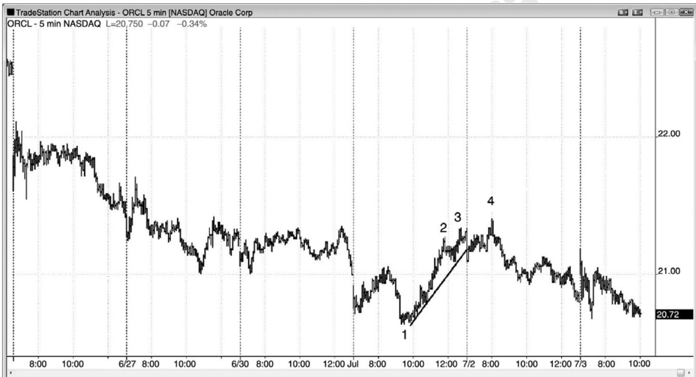
如图 24.19 所示，Oracle（ORCL）的这张 5 分钟图上的最佳交易包括：棒 1 更低低点重要趋势反转（离开前一低点的反弹向上突破一条陡峭的空头趋势线），棒4两条腿更高高点重要趋势反转和小型楔形顶。
向交易区间顶部的迅猛反弹通常是由真空效应引起的，而不是新的趋势。市场具有惯性，当它在交易区间内时，大部分突破尝试失败。空头预期市场会测试 Oracle 过去一两天在 5 分钟图上形成的交易区间的顶部，所以在市场到达那一区域之前，没有理由做空。这使得市场在截止棒 2 的反弹过程中成为单向市场，但是一旦市场到达交易区间顶部，空头便突然出现做空。现在他们预期市场在没有回撤的情况下不会大幅上涨，于是他们积极做空。截止棒 4的三次上推是一个在双棒反转下方做空的极好架构。
P275
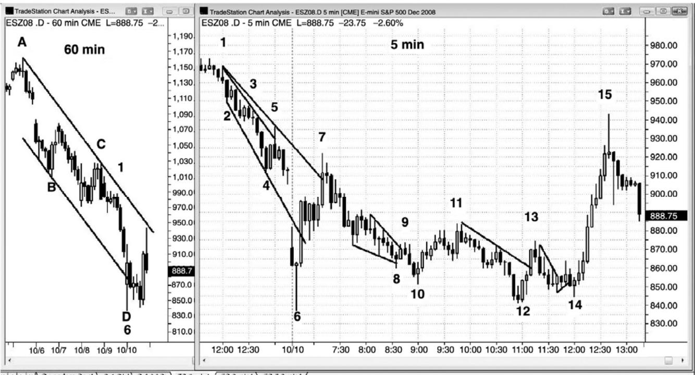
图 24.20 中，右侧 5 分钟电子迷你图表上的最佳交易架构包括：棒 6 开盘反转，棒 7 最终旗形顶和楔形顶（棒6前一棒高点是第一条上涨腿，尽管它是一条空头棒），棒8楔形多头旗形和更高低点，棒 9 向上突破微型空头通道后棒 10 突破回撤，棒 11 低点 2 和双重顶（与跌至棒8的楔形的顶部构成），棒12大型两条腿（棒10是第一次下推）更高低点重要趋势反转（棒 12 是从跌至棒 10 的小空头趋势和从结束于棒 6 的大空头趋势开始的向上反转），棒14更高低点重要趋势反转和二次入场突破回撤买进信号（它也是一个头肩底的右肩，其中棒10 是左肩）。
虽然大部分学术专家和电视权威辩称大盘中的所有运动都是以个股的综合基本面为基础的，但是政治事件常常会引起巨幅波动。一个明显的例子是共和党在 1994 年接管国会时引发的不可思议的多头趋势，常常被称为克林顿超级多头市场。2008年的崩盘是另一个例子。这轮空头趋势和恐慌抛盘是由次货问题引起的，还是国家认识到巴拉克·奥巴马即将入主白宫的直接结果？虽然你必须根据图表显示的来进行交易，但是无论你的政治倾向是什么，试着去理解政治会如何影响市场是非常有意思的。
如此完美的一天！如果你观察右侧的 5 分钟图，那么会看出外形是一个普通的更高低点空头趋势反转，但是通过右图的价格标尺可以看到有些棒线的高度超过了 30 点，而一般交易日内棒线的平均高度大约是两点。这是 2008 年崩盘中这一周道琼斯工业平均指数下跌 20%后，市场尝试至少形成一个临时性底部。一年多以前我便告诉我的朋友们，道指将会在 2008 年跌破 10,000，理由是它看起来已经进入一个多年交易区间。我们可能已经经过一个顶部，卖出可能引出更低的价位，但是交易区间更为常见，所以更有可能出现。
虽然道指今天的区间是 1,000 点，但是对于价格行为交易者来说，它仍然是正常工作的一天。我把自己的头寸规模削减至正常情况下的 20%，因为我不得不在每笔电子迷你交易上承担大约 10 点的风险，然而当天的利润仍然超过了一般交易日的利润。
今天是星期五，道指这一周每天都下跌 200 到 700 点，所以很可能尝试反转。不过，你必须保持耐心，寻找标准的价格行为架构。
左侧图表是 60 分钟图，棒 D（它也是右侧 5 分钟图上的棒 6）跌穿了利用棒 A 和 C（也是 5 分钟图上的棒 1）构造的趋势通道线，然后向上反转。
在 5 分钟图上，市场跌破棒 2 到棒 4 的趋势通道线后，棒 6 形成一条巨大的十字星棒。十字星不是很好的信号棒，但是市场在5 分钟和60分钟图上都在反转趋势通道线突破，而且道指下跌了700点，所以很可能形成一波可交易的反弹。
棒 7 向上突破空头趋势线，但是形成一个最终旗形顶和两条上涨腿，所以很可能出现回撤。不过，从棒 6 低点开始的上涨运动非常迅猛，所以它很可能是测试空头趋势低点后的第二条上涨腿。耐心等待更高低点是比较谨慎的做法（上行动能很强，所以不大可能形成更低低点）。
P276
棒 10 可能是一个底部，因为它是棒 9 楔形突破后的一个更低低点突破回撤。然而，从棒7 开始的下跌运动持续了一个多小时左右，而且非常陡峭，所以在最后触底之前，很可能会形成第二条下跌腿。
截止棒 11 的上涨运动突破了另一条空头趋势线，所以多头正在积聚力量。
与棒 10 相比，棒 12 是一个更低低点，所以可能是当天一个更高低点，但是截止棒 12 的下跌包含太多动能，所以测试很可能出现。
截止棒 13 的多头腿包含几条多头趋势棒，突破了另一条多头趋势线。
棒 14 是一条尺寸不错的多头反转棒，是一个微型趋势线突破，与棒 12 相比，也是一个更高低点，所以这可能是最终低点，果然如此。这使得棒 12 成为棒 6 之后的第一个强更高低点，而且是对那个空头低点的完美测试。这是当天的一笔交易，是截止棒 7 的强势上涨之后，你需要一直等待的一笔交易。今天还有其他很多交易架构，但这一个是容易预期的，而且它表现得非常完美。在 5 分钟和 60 分钟图上有一些趋势通道线过冲，一波截止棒 7 的巨幅上涨使得很可能形成一个更高低点，截止棒 12 的一波两条腿回撤可能形成一个 60 分钟更高低点，随后在棒 14 出现的 5 分钟更高低点确认了棒 12 更高低点。你不需要 60 分钟图便可做这笔交易，我当时就没有使用。我加上它的目的是想说明较高时间框架上也有力量在起作用，从成交量上清楚地看到机构正在关注它们。
在创出当日一个新高之后，棒 15 向上反转。
棒 10 双棒反转处的向上反转，是一个大约有 60%的可能赚到波段利润的架构实例，所以对于所有交易者（包括初学者）来说都是一个很棒的架构。棒4是空头趋势中的一条缺口棒，常常引出对空头低点（此时是棒 2）的测试，然后形成一波反弹，最少包含 10 棒和两条腿。截止棒 6 的空头尖峰太强，所以交易者们不能买进。棒 8 是一个合理的买进位置，因为它是向下突破棒 2 后的第二次反转尝试，一个扩张三角形底（当天第三棒是第一次下推，棒 2 是第二次），棒 7 空头旗形之后的一个最终旗形反转，还是一条强多头反转棒。扩张三角形底总是重要趋势反转架构。然而，由于截止棒 4 的上涨腿和截止棒 6 的下跌腿都非常大，所以大部分交易者不会把这叫做重要趋势反转，而是用其他的名称（不过在 15 分钟图上它几乎肯定是一个外观很棒的重要趋势反转）。棒 10 是一个已经很强的形成中的二次入场。交易者们在棒 10 高点上方买进，它是双棒反转的第二棒，他们的初始保护性止损在它的低点下方。一旦市场到达两倍风险处，他们就部分或全部获利了结，让头寸的剩余部分跟着向上的波段自由奔跑，把止损跟踪调整至最近的更高低点下方。有些人会在棒 19 双重顶（与棒 14 构成的）和楔形（棒 12、14、和 19，以及棒 14、16 和 19）下方离场，另有一些人则会继续持有，一直将止损设在棒 17 下方。
图24.21 中期国库券中的最终旗形
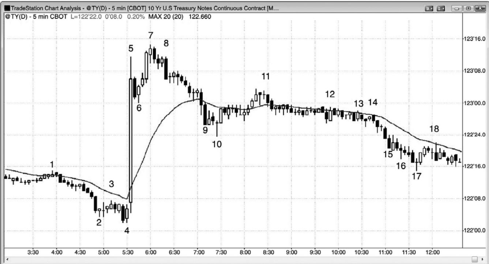
如图24.21所示，美国10年期中期国库券期货5分钟图上的最佳交易架构包括：棒4、7 和 10 处的最终旗形反转；棒 3 处的小型低点 2；棒 6 处的高点 1；棒 11 处的楔形空头旗形二次入场。
最终旗形常常提供高胜率反转交易。
棒 4 是只有一个空头实体的水平空头旗形之后的双棒反转。空头旗形中的多头实体是买压的征兆。
P277
虽然巨大的棒 5 多头趋势棒是一波高潮，但是棒 6 高点 1 是一个合理的买进架构，预期在如此强劲的动能之后至少出现刮头皮上涨。另外，在那条空头内包棒下方做空的空头被套，他们会在棒 6 上方平仓。
棒 7 是一个双棒反转形态的第一棒，第二棒是一条强空头趋势棒。反转发生在略高于棒5高点处，所以多头显然是急于获利了结，空头只是在等待市场超越棒5，然后做空。这是一个很好的最终旗形做空架构，特别是由于棒 7 前一棒也是一条大型多头趋势棒，所以是第二波买进高潮。连续的买进高潮之后通常至少是两条腿调整。
棒 10 是一条相对较大的十字星反转棒，是从 ii 最终旗形突破（ii 形态常常成为最终旗形）开始的向上反转的信号棒。它也是一个小型楔形多头旗形，其中棒 6 是第一次下推，棒9 是第二次下推。
棒 11 是从以棒 10 为起点的小上涨尖峰之后的水平最终多头旗形开始的向下反转的二次信号。它也是一个楔形空头旗形，其中棒9后面的多头内包棒是第一次上推，从棒10开始的反弹是第二次。最后，它是截止棒10的强趋势下跌后的一个均线缺口棒做空架构。
棒 12 和 13 是双棒向上反转架构，但是从未被触发。市场一直没有向上超越那些信号棒。有些交易者把棒 12 看作一个最终旗形买进架构，其中截止棒 12 的紧凑交易区间，可能是从棒12开始的抛盘中的最终旗形。
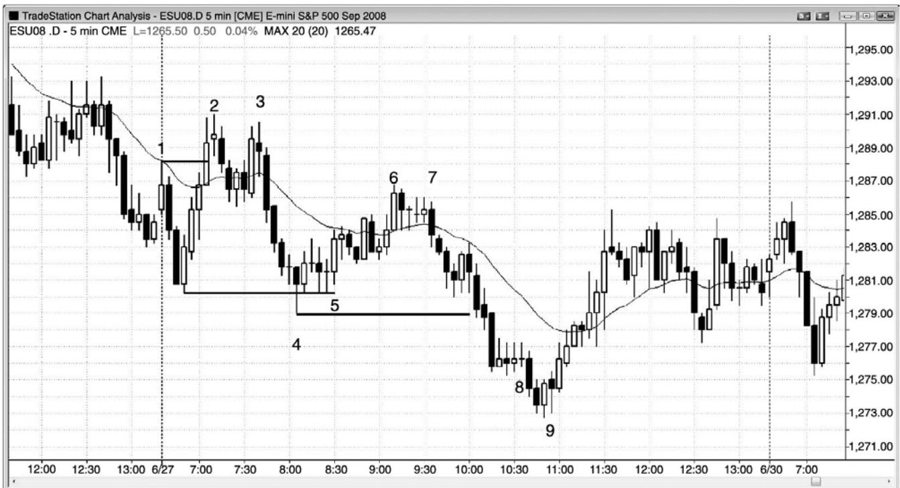
如图 24.22 所示，这张 5 分钟电子迷你图表上的最佳交易架构包括：从前一天低点（形成于棒 1 后面第三棒）开始的双棒向上反转，棒 3 处的双重顶，棒 7 处的楔形空头旗形，以及趋势型交易区间日和台阶形成中棒9小型最终旗形和向上反转。
当一天不是趋势日时，它就是一个交易区间日，或者至少它包含大量双向交易。
棒 2 取代了开盘高点，所以聪明的交易者们会寻找二次入场做空机会，那出现在棒 3 双重顶。当天的初始波段常常是以一个双重顶或双重底开始的。区间大约是平均日区间的一半，所以当天很可能出现突破，成为一个上涨或下跌趋势型交易区间日，然后回撤，测试初始区间的突破。
截止棒 4 的空头尖峰使市场转变为总在场内空头，于是交易者们准备在反弹时做空，预期向下突破，然后向下形成一波近似的测量运动。截止棒 6 的多头通道是一波三推反弹，包含很多重叠棒线和几次微型反转尝试。它比截止棒 4 的抛盘弱很多。一旦交易者们决定不会出现对通道的强势多头突破，他们就认为通道是一个空头旗形，随后将跟着一轮空头趋势。
棒 6 错过棒 3 下方的盈亏平衡止损 1 个跳动，那是空头力量强大的征兆。他们通过在棒 6 积极做空保护了自己的止损。
在棒 6 双棒反转后面的十字星棒或其上方，激进型交易者会设定限价单做空。他们认为这是一个很可能失败的弱高点1买进架构。
棒 9 是一条很强的多头反转棒，但是，由于它与前一棒重叠得非常多，所以它的作用就像是一两双棒反转。由于它的高点与前一棒高点处于同一价位，所以无论交易者把它看作一个双棒反转还是一条多头反转棒都没有关系。无论哪一种情况，它都是趋势型交易区间日中的一个强反转架构，而且是在一波下跌测量运动的（目标）区域，之前是棒 8 最终旗形。它也是当天第三次下推。所有这些因素都促使交易者们认为市场至少会形成一波两条腿反弹，测试棒 4 低点。当棒 9 超越它前面的多头反转棒时买进，是一个大约有 60 的可能引出可获利波段交易的架构，所以对于所有交易者（包括初学者）来说都是一个很强的架构。对于从在棒 8 下方触发的低点 2 最终旗形开始的向上反转，以及大型抛物线楔形底（第一次下推结束于棒 1 后面第三棒，第二次下推结束于棒 4），那条多头反转棒是一条强信号棒。虽然棒 9 是一条空头棒，但是它没有击中多头信号棒下方的保护性止损。另外一些交易者在棒 9 上方买进，因为它是一个二次入场买进信号，与那条多头信号棒构成一个微型双重底。它很可能继续上涨，形成一波测试运动，测量基准是微型双重底的高度（大约是从那条多头棒底部到棒9 顶部的高度的两倍），由于出现一个大的底部形态，所以上涨幅度很可能大得多，比如至少包含10棒和两条腿。
P278
注意，有几个微型反转，而大部分反转来自双重顶和双重底、微型双重顶和双重底、以及最终旗形，几乎总是如此。很多交易者不会选择反转交易架构，除非这些架构中的一个出现。
图24.23 电子迷你中没有明确趋势时的几笔最佳交易
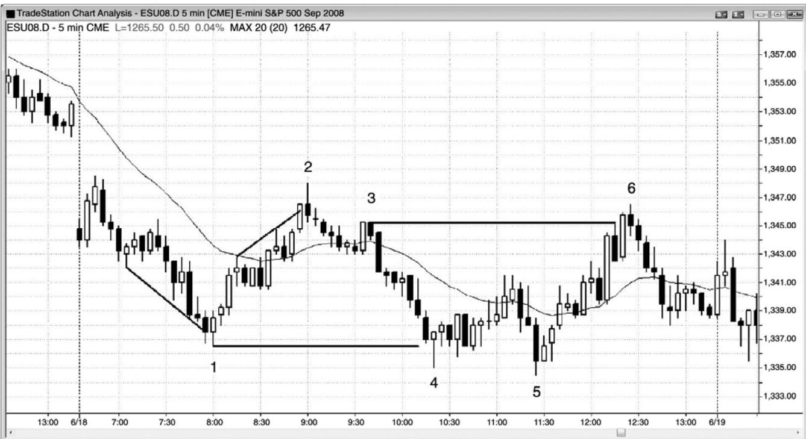
如图 24.23 所示，这张 5 分钟电子迷你图表上的最佳交易包括：缺口尖峰和通道底部之后的双棒反转棒1；当日新高以及尖峰和通道顶部的反转棒2；微型通道失败突破棒 3（一个低点 1）；当天第三次下推、更低低点、以及交易区间底部的最终旗形突破和向上反转棒 5；双重顶、尖峰和通道顶、低点4、自己交易区间顶部棒6。
在一个没有明确趋势的交易日内，交易者们应该准备在新的极点反向入场，尤其是二次入场和楔形。
棒1是一个楔形反转，反转棒很强。
棒 2 是一个双重顶、一个楔形顶、一个二次入场均线缺口棒做空架构。
棒 3 是突破测试信号棒，击中了空头设在棒 2 下方的盈亏平衡止损。
棒 4 是陡峭下跌中的一个十字星。由于它可能仅仅转变为一个单棒或双棒空头旗形，所以交易者们等待二次入场买进。激进型交易者可能设定限价单在棒 4 后一棒低点或其下方买进，预期形成第二条上涨腿。他们把这看作一个弱低点1做空架构，所以认为它很可能失败。
棒 5 是第二次尝试向一个低于低点 1 的新低突破后的向上反转。构成信号棒的内包棒有一个多头收盘。
棒 6 是一个低点 4 做空架构，是向上突破波段高点棒 3 后的反转。
图24.24 胜率为50%时，回报必须是风险的两倍
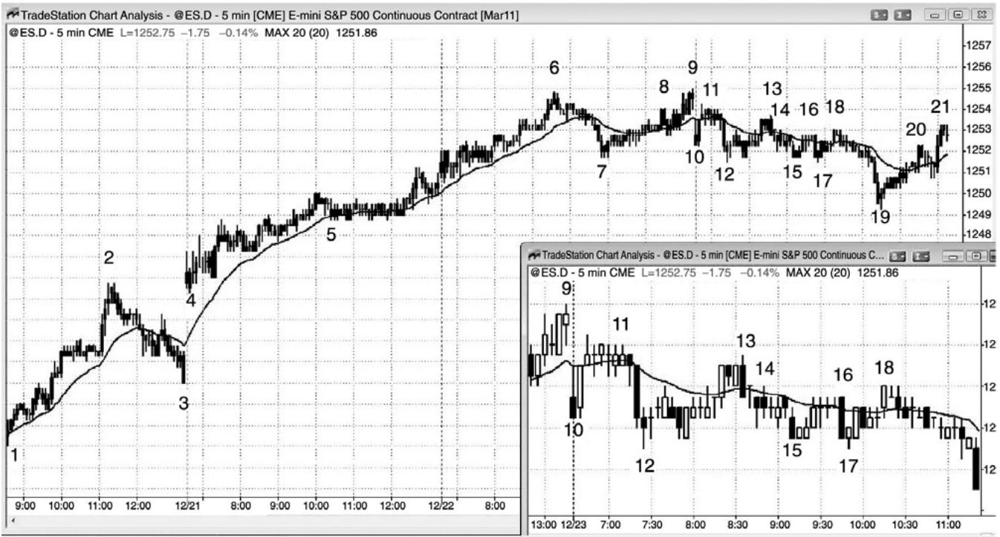
P279
虽然在交易区间中部做空可能只有50%的成功率，但是，如果回报是风险的两倍，那么它可能是一笔最佳交易。如图 24.24 所示，5 分钟电子迷你数周来处于一轮强多头趋势中，在棒 7 形成一条均线缺口棒。这常常引起对多头高点的最后一次测试，然后便形成至少包含两条腿的、幅度更深的调整。棒 10 处开盘向下小幅跳空，然后立即上涨，刚好超越均线。空头正在寻找第二条下跌腿，但是不确定截止棒 10 的单棒下跌是否足以构成第一条腿。当一波运动不清晰时，通常没有足够的交易者认为它会成功，所以没有足够的交易者在它上面押注。结果在运动变得较为清晰之前，没有坚持到底。截止棒 12 的两条腿运动，引起了截止棒 13的两条腿反弹，有些交易者把它看作一个小的楔形空头旗形。还有一些交易者把它看作一个头肩顶的右肩，棒6是左肩。有些人也认为它与棒11构成一个双重顶空头旗形。它是一个低于棒9高点和棒11前后高点的高点，它可能是一条较大的第二条下跌腿的起点。
由于在棒 11 下方做空是在一个两日交易区间的中部做空，所以等距运动的方向概率大约是 50%。下跌 1 点前上涨 1 点的概率是 50%，上涨 1 点前下跌 1 点的概率也是 50%。对于幅度为两点、3 点或 4 点的等距运动也是如此。一般而言，当市场处于交易区间内时，如果已经上涨了5到10 棒，那么交易者们应该只寻找做空架构。棒11是从开盘低点起的第八棒，而且随后一棒标志着市场第三次跌破前一棒低点。交易者们会在这里做空，甚至是在第一次或第二次尝试下跌时做空，希望足够多的交易者把这看作一个潜在的更低高点，于是将出现更多的卖压。由于它的说服力不足，所以直到棒13处出现一个更清晰的高点，下跌运动才开
始。
那么，当只有 50%的成功率，而且位于多头趋势内一段交易区间的中部时，为什么在棒11 附近做空是一笔最佳交易呢？记住交易者方程有三个变量，除了胜率之外，你还必须考虑回报和风险。由于过去一个月左右电子迷你的平均日区间超过10点，而今天的区间只有两点，而且过去一两年中区间在 5 点或 6 点之下的交易日屈指可数，所以，今天的区间的收盘前增至两倍或三倍的几率很高。问题是交易者们不知道突破是向上还是向下，还是既有向上突破又有向下突破。由于市场已经在一段交易区间内上涨了 8 棒，所以几率偏向于近期内下跌。交易者们完全可以做空，把保护性止损设在棒 11 信号棒上方，在入场点下方 4 点处设置一张双向（OCO）限价单，然后耐心等待。由于存在如此多的不确定性，所以仅当他们甘愿经历回撤时才会做这笔交易，而回撤在交易区间中是不可避免的。实际风险只有 4 个跳动，所以交易者们正在冒着 4 个跳动的风险去博取 16 个跳动的利润，而且拥有大约 50%的成功率。尽管
一旦出现一条大型空头突破棒，然后立即在棒12出现坚持到底，那么对于大部分交易者来说市场就是总在场内空头，而且他们会假定市场保持总在场内空头状态，除非出现总在场内买进信号，或者直到市场以棒 11 后面的小型空头棒向上超越空头尖峰的顶部。棒 13 准确无误地测试那一棒高点，市场最终下跌至棒 19。棒 19 低点比棒 11 信号棒低了 17 个跳动，而且棒 19 拥有一个多头实体。这可能是一个 17 跳动失败，也就是说很多空头在信号棒下方16 个跳动而不是 17 个跳动处获利了结。他们在距 4 点运动 1 个跳动处离场，那是空头势弱的一个征兆。市场击中限价单，让空头以 4 点的利润离场，那一棒最终成为一条多头反转棒。由于 17 跳动失败，大部分空头会在棒 19 多头反转棒上方离场，获利 11 个跳动，而不是希望市场下跌，给他们原来计划的16个跳动的利润。
P280
这是圣诞节前的一周，假期前后的平均日区间通常较小。过去一两周中有几天的区间小于 7 点。另外，由于初始风险只有 4 个跳动，而不是通常的 7 个或 8 个跳动，所以很多交易者认为较小的风险和较小的近期平均日区间意味着赚到 4 点的可能性也较低。这些交易者中有很多预期 17 个跳动失败，把限价单设在入场点下方 15 个跳动处，而不是下方 6 个跳动处。每当一波运动很有可能提前结束时，很多交易者会使用小于正常值 1 个跳动的限价单，知道市场常常会击中明显的目标价位，但是会在执行获利了结限价单前反转。而另外一些交易者会将获利了结限价单设在入场点下方3点处，显然他们会赚到3点的利润。